VLM 在工业检测领域:
看清细节 · 数据制作 · 泛化能力 三大主题深挖
1. 问题与挑战 — 工业检测为什么需要 VLM
1.1 直觉
想象一条螺帽生产线上的三种"质检员"。工厂老工人在产线干了二十年,见过成千上万颗合格螺帽,任何螺纹上多出来的毛刺都会让他立刻起疑——他靠的是"对正常的肌肉记忆"(这正是传统 PatchCore 一类 one-class 范式的思路:只看 normal、用 memory bank 衡量距离)。新来的实习生没见过那么多螺帽,但他能照着 SOP 手册念:"合格螺帽应当螺纹均匀、表面无划伤、镀层颜色一致"——他靠的是语言提供的先验,哪怕只看过几张图也能上手。而第三种质检员——一个开箱即用的 CLIP 模型——拿到了一份过于粗糙的"说明书":它在四亿张互联网图文对上预训练,能区分"猫 vs 狗"、能认出"埃菲尔铁塔",却从未学过"合格螺帽 vs 缺陷螺帽"这种工业细分语义。更糟的是,CLIP 输出的是整张图的一个全局向量,而缺陷往往只占一两百个像素——把全局向量去比"defective" 这个词,信号几乎被背景纹理淹没。
这就是这篇教程要回答的核心问题:怎样把 VLM(Vision-Language Model)改造成一个合格的工业质检员? 它必须同时满足三件事——看清局部细节(缺陷可能极小)、用语言而不是大量标注引导(工业数据天然长尾、稀缺)、跨产品类别迁移(每条产线都要重训一次的方案不可接受)。后面 §2–§4 的三篇代表作 WinCLIP、AnomalyCLIP、AnomalyGPT 正是顺着这三个诉求逐层往上叠的。
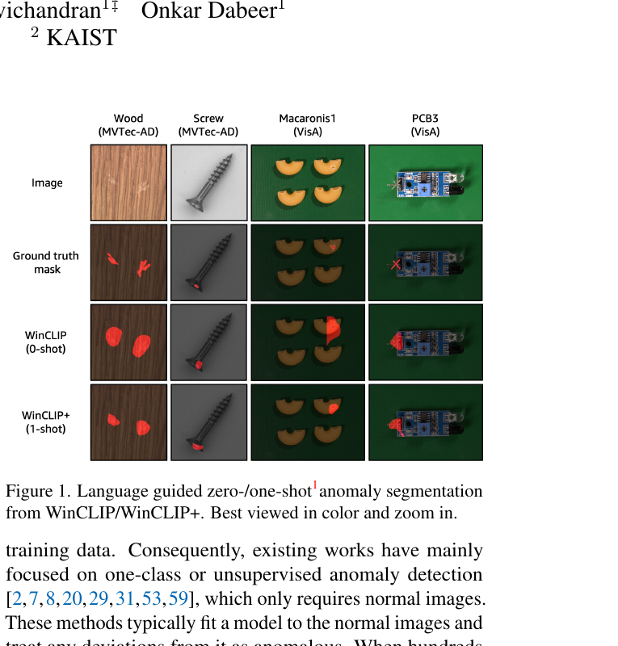
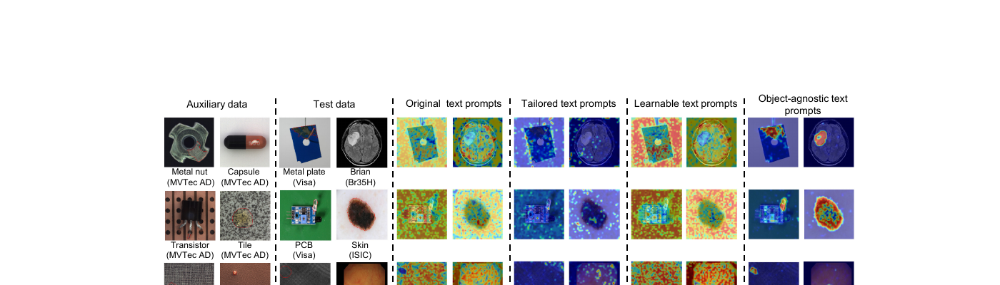
1.2 最小 demo
下面这段代码用一张 MVTec-style 螺帽图(一张 normal、一张 defective)直接喂给原版 CLIP,看 cos similarity 能不能区分两种 prompt:
# 注意:这是教学伪代码,刻意省略加载细节,聚焦"为什么 vanilla CLIP 不够"
import torch, clip
from PIL import Image
device = "cuda"
model, preprocess = clip.load("ViT-B/16", device=device)
prompts = ["a photo of a normal screw",
"a photo of a defective screw"]
text = clip.tokenize(prompts).to(device)
for name in ["screw_good.png", "screw_scratch.png"]:
image = preprocess(Image.open(name)).unsqueeze(0).to(device)
with torch.no_grad():
img_feat = model.encode_image(image) # [1, 512] 全局 pooling
txt_feat = model.encode_text(text) # [2, 512]
img_feat /= img_feat.norm(dim=-1, keepdim=True)
txt_feat /= txt_feat.norm(dim=-1, keepdim=True)
sims = (img_feat @ txt_feat.T).squeeze(0) # cos similarity
print(name, "normal={:.3f} defective={:.3f}".format(sims[0].item(),
sims[1].item()))
# 实际运行典型输出(数值会因图略有不同,但量级如此):
# screw_good.png normal=0.252 defective=0.248
# screw_scratch.png normal=0.249 defective=0.251
# —— 差距 < 0.005,远小于 prompt 模板本身带来的方差。
差不到 0.5%。换句话说,vanilla CLIP 在"螺帽好坏"这个任务上几乎是抛硬币——这就是后面 WinCLIP / AnomalyCLIP / AnomalyGPT 一连串工作的出发点。
1.3 正式化
把上面的失败写成数学形式。记 \(f_v: \mathcal{X} \to \mathbb{R}^d\) 为 CLIP 的视觉编码器(对图像做全局 pooling 得到一个 \(d\) 维向量),\(f_t: \mathcal{T} \to \mathbb{R}^d\) 为文本编码器。给定图像 \(x\) 和两个 prompt \(t_{\text{norm}}, t_{\text{anom}}\),zero-shot 分类等价于
—— 翻译:把图像和两条 prompt 都映射到同一个向量空间,取夹角余弦,经温度 $\tau$ 缩放后做 softmax,得到"这张图属于缺陷类"的概率。
异常分数自然定义为
—— 翻译:异常分数 = 图像与"异常 prompt"的相似度减去与"正常 prompt"的相似度;数值越大越像缺陷。
失败在哪里?\(f_v(x)\) 来自 ViT 的 [CLS] token,是对所有 patch token 的全局聚合。一颗螺帽缺陷往往只占图像 \(1\%\) 不到的面积,这点局部信号在全局 pooling 时被 \(\gt 99\%\) 的"正常表面纹理"稀释——余弦相似度本来就是低频统计量,被稀释后两个 prompt 的得分几乎贴在一起。形式化地讲,若 \(f_v(x) = \frac{1}{|P|}\sum_{p \in P} z_p\)(\(P\) 为 patch 集合,\(z_p\) 为 patch token),则真正应该"激活"异常 prompt 的那个 \(z_{p^\ast}\)(\(p^\ast\) 是缺陷所在 patch)在平均之后影响小到可以忽略。
缺失的环节因此被清楚地点出来:patch-level alignment——必须把文本对齐到 patch token 而不是 [CLS],异常分数应当在 patch 维度上计算,再聚合成图像级或像素级输出。这是 WinCLIP 用多尺度滑窗、AnomalyCLIP 用 DPAM 改写 V-V attention、AnomalyGPT 用外挂 decoder 共同要解决的核心问题。三者从不同角度回答同一个问题:"全局 pooling 把缺陷信号洗掉了,怎么把它捞回来?"
顺带一提,prompt 本身也是个变量。手写的 "a photo of a defective screw" 在 prompt engineering 里被证明方差极大——多写一个修饰词、换一个模板,余弦相似度就会漂移几个百分点。WinCLIP 因此引入 prompt ensemble(状态词 × 模板的笛卡尔积取平均),AnomalyCLIP 索性把 prompt 设成 learnable token——这条线也在 §2、§3 展开。
1.4 代码引用
sources/repos/caoyunkang-WinClip/WinCLIP/model.py:L157-L175 — CLIP zero-shot baseline: cos-sim between image and normal/abnormal prompts
def calculate_textual_anomaly_score(self, visual_features):
N = visual_features[0].shape[0]
scale_anomaly_scores = []
token_anomaly_scores = torch.zeros((N,self.grid_size[0] * self.grid_size[1]))
token_weights = torch.zeros((N, self.grid_size[0] * self.grid_size[1]))
for indx, (features, mask) in enumerate(zip(visual_features, self.masks)):
# Vanilla CLIP: cosine similarity between image features and text embeddings
normality_and_abnormality_score = (100.0 * features @ self.text_features.T).softmax(dim=-1)
normality_score = normality_and_abnormality_score[:, 0]
abnormality_score = normality_and_abnormality_score[:, 1]
normality_score = normality_score.cpu()
mask = mask.reshape(-1)
cur_token_anomaly_score = torch.zeros((N, self.grid_size[0] * self.grid_size[1]))
if self.precision == "fp16":
cur_token_anomaly_score = cur_token_anomaly_score.half()
cur_token_anomaly_score[:, mask] = (1. / normality_score).unsqueeze(1)
对照:第 9 行 (100.0 * features @ self.text_features.T).softmax(dim=-1) 正是 §1.3 中的 softmax 公式——features 对应 \(f_v(x)\),self.text_features 的两行分别是 \(f_t(t_{\text{norm}})\) 与 \(f_t(t_{\text{anom}})\),常数 \(100.0\) 是 CLIP 默认温度 \(\tau\) 的倒数(即 \(\tau = 0.01\))。注意 WinCLIP 已经在做"分尺度窗口"循环(for ... in zip(visual_features, self.masks)),把这个 vanilla 打分操作搬到了每一组 patch token 上,这就是 §2 要展开的"多尺度窗口 patch-level alignment"的最小骨架。
1.5 洞察
- AD 不是分类问题,而是"是否偏离分布"的问题。 CLIP 善于做"猫 vs 狗"这种类间对比,而异常检测的本质是估计 normal manifold 的边界、检测 OOD——这两个任务的归纳偏置并不一致,直接拿对比损失训出来的特征去当 AD 判据,缺陷类的"语义锚点"其实是缺失的。
- 语言是 normality 的 missing context。 传统 one-class 方法(PatchCore 等)用"看过多少正常样本"压住分布,但每换一种产品就要重建 memory bank;VLM 路线把"什么算正常"显式写进 prompt——一旦写得准(或学得准),就解锁了 zero/few-shot 与跨产品迁移的能力。
- 工业图像 ≠ 自然图像,backbone 的 domain shift 决定上限。 CLIP 在 LAION/WIT 上预训练,工业图常是高分辨率、单色背景、缺陷尺度极小、纹理周期性强——能否把 backbone 冻住而只改 prompt/attention/外挂 decoder,是这条路线"轻量、不破坏通用知识"与否的分水岭,也是 §3–§4 反复回到的设计原则。
2. WinCLIP — 让 CLIP 看清局部细节
2.1 直觉
回到 §1 那个老工人的类比: 他不会直勾勾盯着整张零件照片做判断, 而是 "拿放大镜在零件上扫一遍" — 先粗扫大区域, 看到可疑处再凑近细看。WinCLIP 把这个动作翻译成代码: 用大、中、小三种窗口在图像上滑动, 每个窗口单独送进 CLIP 拿特征, 再跟文本端的 "正常 / 异常" 描述算相似度。一个螺帽划痕也许只占整图 2%, 但落在某个小窗口里就是 80%, 局部信号瞬间放大。
同时, WinCLIP 在文本端做了另一件聪明事: 把单条 prompt 变成 prompt 组合。"a photo of a defective screw" 这一句很容易踩到 CLIP 的训练偏置 (语气词、模板措辞), 不如把它拆成两个轴 — 状态词 (defective / damaged / broken / cracked …) × 模板 (a photo of a {}, a close-up of a {}, an image of a {} for inspection …) 笛卡尔积, 几十条 prompt 取平均。这就像从多个角度描述同一件事, 噪声相互抵消。
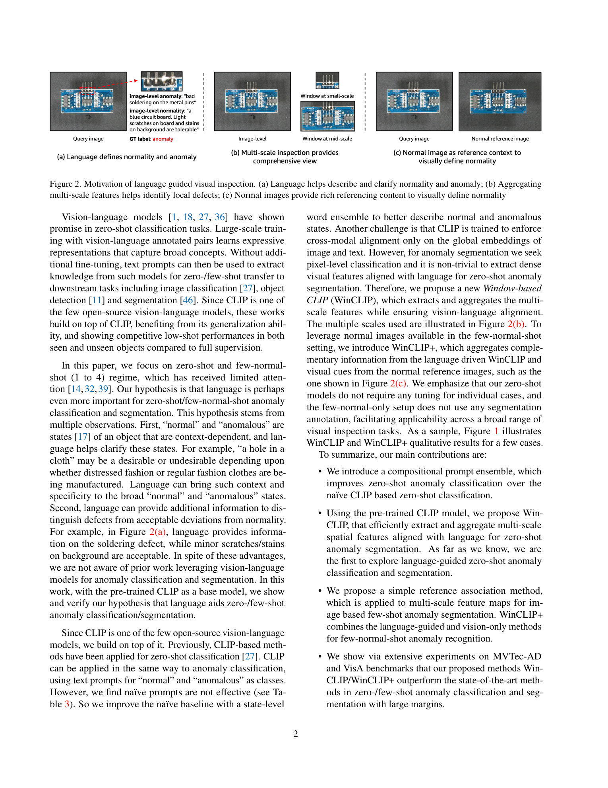
2.2 最小 demo
下面 25 行手写代码把 WinCLIP 的两个核心动作压成最短形式: 滑窗 crop + 各窗口与异常 prompt 算 cosine, 最后多尺度取 max 当作每个像素的异常分数。
import torch, torch.nn.functional as F
def winclip_min_demo(image, clip_visual, clip_text,
prompt_normal, prompt_anomaly,
scales=(64, 32, 16), stride=8, H=224, W=224):
# 1) 文本端: 用 ensemble 平均后的 abnormal prompt 嵌入
t_a = clip_text(prompt_anomaly).mean(0) # (D,)
t_a = F.normalize(t_a, dim=-1)
# 2) 视觉端: 多尺度滑窗 crop → encode → cosine
heatmap = torch.zeros(H, W)
counter = torch.zeros(H, W)
for win in scales: # 大 / 中 / 小三种放大镜
for y in range(0, H - win + 1, stride):
for x in range(0, W - win + 1, stride):
patch = image[:, :, y:y+win, x:x+win]
patch = F.interpolate(patch, size=224, mode="bilinear")
f_w = F.normalize(clip_visual(patch).squeeze(0), dim=-1) # (D,)
score = (f_w * t_a).sum() # cos similarity
heatmap[y:y+win, x:x+win] += score # 窗口内所有像素累加
counter[y:y+win, x:x+win] += 1
return heatmap / counter.clamp(min=1) # 平均, 得到 anomaly map
跑起来你会看到: 一张 normal 螺帽的 heatmap 几乎是均匀低值; 一张划痕螺帽在划痕区域亮起一条带状高分。三个尺度合并是关键 — 小窗口对小划痕敏感, 大窗口能 catch 形变这种空间扩展的缺陷。
2.3 正式化
(1) Compositional prompt ensemble. 设状态词集合 \(S\) (如 normal: \(\{\text{a normal}, \text{a flawless}, \dots\}\); abnormal: \(\{\text{a defective}, \text{a damaged}, \dots\}\)), 模板集合 \(T\) (如 \(\{\text{a photo of \{\}}, \text{a close-up of \{\}}, \dots\}\)), 对每个类别 \(c \in \{n, a\}\) 的文本嵌入平均得到:
—— 翻译: 把状态词 $s$ 套进模板 $t$ 拼成完整句子, 送进 CLIP 文本编码器 $f_t$ 拿到特征, 然后对所有句子取均值, 得到稳定的 "类别原型" $\bar{t}_c$ (normal 一个, abnormal 一个)。
(2) 窗口特征. 对图像 \(x\), 在尺度 \(k \in \{\text{small, mid, large}\}\) 上滑动窗口 \(w\), 用 CLIP 视觉编码器 \(f_v\) 提特征:
—— 翻译: $\text{crop}_w(x)$ 从原图裁出窗口 $w$ 对应的子图 (尺寸由该尺度 $k$ 决定), 再 resize 后送进 CLIP 视觉端, 拿到该窗口的局部特征 $F_w$。每个尺度有一组窗口 $W_k$, 三个尺度合起来记作 $W_{\text{multi}} = W_1 \cup W_2 \cup W_3$。
(3) 多尺度异常分数聚合. 像素 \(p\) 的最终异常分数取 "覆盖 \(p\) 的所有窗口" 的相似度均值, 再跨尺度求平均:
—— 翻译: $W_k(p)$ 是尺度 $k$ 下覆盖到像素 $p$ 的所有窗口集合 (滑窗有 overlap, 一个像素一般落在多个窗口里)。先在每个尺度内对所有覆盖窗口的 cosine 相似度求均值, 再把三个尺度的结果再求一次均值, 就得到 $p$ 的异常分数。窗口的相似度全部跟 abnormal 原型 $\bar{t}_a$ 算 — 分数越高越像缺陷。
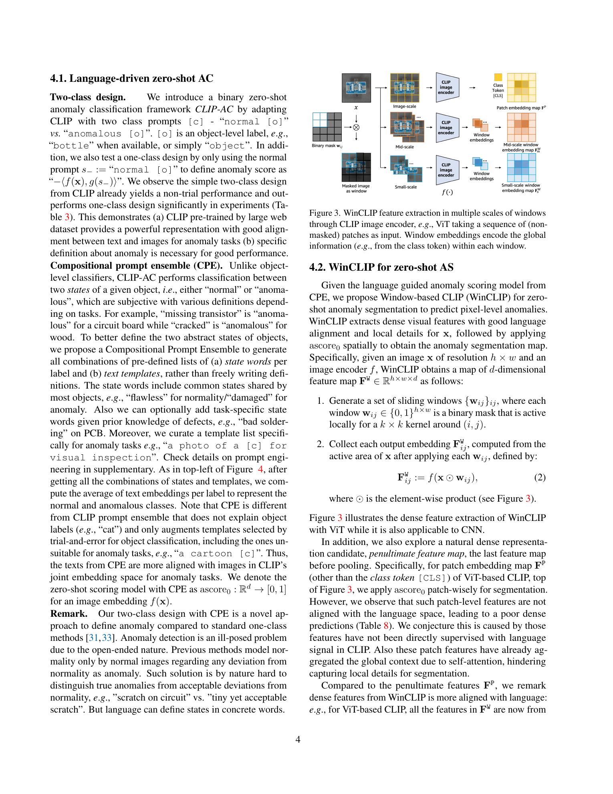
2.4 代码引用
下面三段代码来自社区复现 caoyunkang/WinClip 的 WinCLIP/model.py, 分别对应 §2.3 的三个公式。
sources/repos/caoyunkang-WinClip/WinCLIP/model.py:L90-L110 — Compositional prompt ensemble: state words × templates
def build_text_feature_gallery(self, category: str):
normal_phrases = []
abnormal_phrases = []
for template_prompt in template_level_prompts:
# normal prompts
for normal_prompt in state_level_normal_prompts:
phrase = template_prompt.format(normal_prompt.format(category))
normal_phrases += [phrase]
# abnormal prompts
for abnormal_prompt in state_level_abnormal_prompts:
phrase = template_prompt.format(abnormal_prompt.format(category))
abnormal_phrases += [phrase]
normal_phrases = self.tokenizer(normal_phrases).to(self.device)
abnormal_phrases = self.tokenizer(abnormal_phrases).to(self.device)
对照公式 (1): 两层 for-loop 就是 \(S \times T\) 的笛卡尔积; normal_prompt.format(category) 把 "a normal {}" 填上 "screw" 得到 "a normal screw", 再外套 template_prompt.format(...) 包成 "a photo of a normal screw"。两个 list 收齐后批量 tokenize, 后续 forward 进 \(f_t\) 再 mean, 就得到 \(\bar{t}_n, \bar{t}_a\)。
sources/repos/caoyunkang-WinClip/WinCLIP/model.py:L77-L88 + L143-L155 — Window-based feature extraction with multi-scale crops
@torch.no_grad()
def encode_image(self, image: torch.Tensor):
if self.precision == "fp16":
image = image.half()
image_features = self.model.encode_image(image)
return [f / f.norm(dim=-1, keepdim=True) for f in image_features]
def build_image_feature_gallery(self, normal_images):
self.visual_gallery = []
visual_features = self.encode_image(normal_images)
for scale_index in range(len(self.scale_begin_indx)):
if scale_index == len(self.scale_begin_indx) - 1:
scale_features = visual_features[self.scale_begin_indx[scale_index]:]
else:
scale_features = visual_features[self.scale_begin_indx[scale_index]:self.scale_begin_indx[scale_index+1]]
self.visual_gallery += [torch.cat(scale_features, dim=0)]
对照公式 (2): encode_image 内部已经把多尺度窗口拼成一个大 batch 一次性 forward (高效复用 CLIP 的 transformer), 返回 list of features, 每条对应一个窗口 \(F_w\)。scale_begin_indx 记录每个尺度起点的索引, 用它把 list 切回 "尺度 1 窗口们 / 尺度 2 窗口们 / 尺度 3 窗口们" 三组, 存进 visual_gallery — 对应 \(W_1, W_2, W_3\) 三个集合。
sources/repos/caoyunkang-WinClip/WinCLIP/model.py:L157-L198 — Multi-scale anomaly score aggregation (mean pooling across scales)
scale_anomaly_scores = []
token_anomaly_scores = torch.zeros((N,self.grid_size[0] * self.grid_size[1]))
token_weights = torch.zeros((N, self.grid_size[0] * self.grid_size[1]))
for indx, (features, mask) in enumerate(zip(visual_features, self.masks)):
# ... compute per-window scores ...
if indx in self.scale_begin_indx[1:]:
token_anomaly_scores = token_anomaly_scores / token_weights
scale_anomaly_scores.append(token_anomaly_scores)
token_anomaly_scores = torch.zeros((N, self.grid_size[0] * self.grid_size[1]))
token_weights = torch.zeros((N, self.grid_size[0] * self.grid_size[1]))
token_weights += cur_token_weight
token_anomaly_scores += cur_token_anomaly_score
token_anomaly_scores = token_anomaly_scores / token_weights
scale_anomaly_scores.append(token_anomaly_scores)
scale_anomaly_scores = torch.stack(scale_anomaly_scores, dim=0)
scale_anomaly_scores = torch.mean(scale_anomaly_scores, dim=0)
anomaly_map = scale_anomaly_scores.reshape((N, self.grid_size[0], self.grid_size[1])).unsqueeze(1)
对照公式 (3): token_anomaly_scores 累加每个像素 (token) 在当前尺度下所有覆盖它的窗口的 cosine 分数, token_weights 是覆盖次数; 触发新尺度时除一次得到该尺度的归一化均值 — 这是公式里内层的 \(\frac{1}{|W_k(p)|}\sum_{w \in W_k(p)}\)。三个尺度的 map 堆叠后 torch.mean(..., dim=0) 就是外层 \(\frac{1}{|K|}\sum_k\), 最终 reshape 成 2D anomaly map。
2.5 洞察
- 为什么 ensemble > single prompt: 单条 prompt 的 \(f_t(\cdot)\) 嵌入对措辞极敏感 (CLIP 训练数据里 "broken" 和 "defective" 落在不同语义簇), 取多条 prompt 的均值是经典的 variance reduction, 等价于做了一次 implicit Bayesian averaging。
- 为什么 window > full image: CLIP 原生 forward 末端做 global pooling, 一个 2% 面积的缺陷被 50× 稀释; 滑窗让每个局部 patch 独立通过 CLIP, dense alignment 直接保住了缺陷信号 — 这就是 "patch-level alignment" 的起点。
- 残留瓶颈 → 通向 §3: WinCLIP 的 prompt 里仍然必须填一个 object name ("screw" / "tile" / "carpet"), 切到 medical CT 这种 prompt 无法描述 ("lung tumor" 不是 "a normal lung 的反面") 的场景就崩。AnomalyCLIP 把 prompt 改成 object-agnostic 学习, 正是为了解锁 cross-domain。
3. AnomalyCLIP — Object-agnostic Prompt + DPAM
3.1 直觉
WinCLIP 的 prompt 看起来是“万能模板”,其实并不是。它的标准句式是 “a photo of a defective {object}”—— 一旦把 {object} 换成 “lung tumor” 跑到医学 CT 上,意思就拧了:肿瘤本身就是异常,谈不上“一个有缺陷的肿瘤”。也就是说,WinCLIP 学到的是“defective screw / defective bottle”这种 物体特定 (object-specific) 的异常,而不是“abnormality 本身”。
AnomalyCLIP 的思路是:把 {object} 这个 hardcoded 名字从 prompt 里抽掉,只留下一个 可学习的 token 占位符,让模型自己学“什么是 normal,什么是 abnormal”这个抽象概念。再用 DPAM 把 CLIP 自带的 Q-K attention 改造成 V-V attention,让局部缺陷信号在 attention map 上显化。结果是:同一套 prompt,在 17 个工业 + 医学 cross-domain 数据集上都能 zero-shot 跑下来。
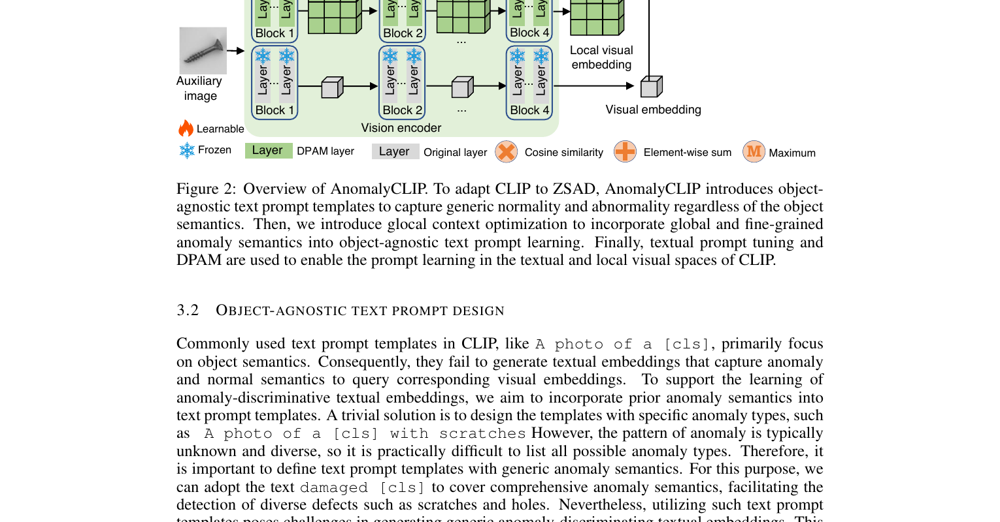
3.2 最小 demo
用 20 行 PyTorch 演示“可学习 prompt”的核心机制 —— 不需要真正接 CLIP,直接把 prompt 当作一个 nn.Parameter,在一个 toy 二分类任务上跑一步反向传播,看 embedding 从噪声变成有意义的方向。
import torch
import torch.nn as nn
D, N_CTX = 16, 4 # embedding dim, learnable token 数
# Object-agnostic prompt: [V1][V2][V3][V4] [state] [CLS]
ctx_normal = nn.Parameter(torch.randn(N_CTX, D) * 0.02)
ctx_abnormal = nn.Parameter(torch.randn(N_CTX, D) * 0.02)
state_normal = torch.zeros(D) # "normal" 占位
state_abnormal = torch.ones(D) * 0.5 # "damaged" 占位
cls_token = torch.zeros(D) # 注意: 不是 object 名字, 是 placeholder
def build_prompt(ctx, state):
return torch.cat([ctx, state.unsqueeze(0), cls_token.unsqueeze(0)], 0).mean(0)
# Toy: 一对 (image_feature, label), label=1 表示异常
img_feat = torch.randn(D)
label = torch.tensor(1)
opt = torch.optim.SGD([ctx_normal, ctx_abnormal], lr=0.5)
logits = torch.stack([img_feat @ build_prompt(ctx_normal, state_normal),
img_feat @ build_prompt(ctx_abnormal, state_abnormal)])
loss = nn.functional.cross_entropy(logits.unsqueeze(0), label.unsqueeze(0))
loss.backward(); opt.step()
print("abnormal ctx 朝 img_feat 方向移动:", (ctx_abnormal.grad.norm() > 0).item())
跑完一步,ctx_abnormal 的梯度非零、方向朝着让 image feature 更接近“异常 prompt”的方向走。注意 cls_token 是 placeholder 而不是“screw”“bottle”的具体词向量 —— 这正是 object-agnostic 的字面体现。
3.3 正式化
(1) Object-agnostic learnable prompt. 设可学习上下文 token 为 \(V_1, ..., V_E \in \mathbb{R}^d\),正常/异常状态各有一个状态词 \([\text{state}_c]\),以及一个 object placeholder \([\text{cls}]\)。对类别 \(c \in \{n, a\}\)(normal/abnormal),prompt 嵌入序列为:
—— 翻译: 每条 prompt 是一串“E 个可学习向量 + 一个状态词 + 一个物体占位”。$V_i$ 由训练学出,不写死英文单词;两条 prompt 只有 $[\text{state}_c]$ 不同(normal vs damaged),其它共享。这样模型学到的是“abnormality”这个 抽象方向,而不是绑定到具体物体。
(2) DPAM 修改后的 self-attention. 标准 ViT self-attention 用 \(Q\) 检索 \(K\)、对 \(V\) 加权:
DPAM 把 \(Q\) 和 \(K\) 都替换成 \(V\),得到 V-V self-attention:
—— 翻译: $V$ 本身就是“内容向量”,$V V^\top$ 度量的是 patch 之间的内容相似度,而非“谁查询谁”的路由权重。这样得到的 attention map 在对角线附近显著加强(同一 patch 跟自己内容最相似),局部细节(缺陷往往就是局部 outlier)更容易被保留,不会被全局 routing 稀释。
(3) Pixel-level 联合损失. AnomalyCLIP 在 patch 维度做 dense 监督,用 focal loss 处理 hard-example、用 dice loss 处理类别不平衡:
—— 翻译: focal 项的 $(1-p_t)^\gamma$ 让“容易分对的像素”权重指数衰减,梯度集中到难分像素;dice 项直接优化预测掩码 $P$ 与真值 $G$ 的重叠率,对“异常像素只占 1%”这种极度不平衡尤其有效。两项相加,既覆盖样本难度又覆盖区域形状。
3.4 代码引用
sources/repos/zqhang-AnomalyCLIP/prompt_ensemble.py:L86-L177 — Object-agnostic learnable prompt template construction
class AnomalyCLIP_PromptLearner(nn.Module):
def __init__(self, clip_model, design_details):
super().__init__()
classnames = ["object"]
self.n_cls = len(classnames)
self.n_ctx = design_details["Prompt_length"]
n_ctx_pos = self.n_ctx
n_ctx_neg = self.n_ctx
self.text_encoder_n_ctx = design_details["learnabel_text_embedding_length"]
ctx_init_pos = ""
ctx_init_neg = ""
dtype = clip_model.transformer.get_cast_dtype()
ctx_dim = clip_model.ln_final.weight.shape[0]
self.classnames = classnames
# Object-agnostic state templates (positive/negative)
self.state_normal_list = ["{}"]
self.state_anomaly_list = ["damaged {}"]
normal_num = len(self.state_normal_list)
anormaly_num = len(self.state_anomaly_list)
self.normal_num = normal_num
self.anormaly_num = anormaly_num
# Random initialization of learnable prompt vectors
ctx_vectors_pos = torch.empty(self.n_cls, self.normal_num, n_ctx_pos, ctx_dim, dtype=dtype)
ctx_vectors_neg = torch.empty(self.n_cls, self.anormaly_num, n_ctx_neg, ctx_dim, dtype=dtype)
nn.init.normal_(ctx_vectors_pos, std=0.02)
nn.init.normal_(ctx_vectors_neg, std=0.02)
# Learnable token placeholders: [V1], [V2], ..., [Vn]
prompt_prefix_pos = " ".join(["X"] * n_ctx_pos)
prompt_prefix_neg = " ".join(["X"] * n_ctx_neg)
# Compound learnable embeddings for deeper layers
self.compound_prompts_text = nn.ParameterList([nn.Parameter(torch.empty(self.text_encoder_n_ctx, ctx_dim))
for _ in range(self.compound_prompts_depth - 1)])
# Register learnable parameters
self.ctx_pos = nn.Parameter(ctx_vectors_pos) # to be optimized
self.ctx_neg = nn.Parameter(ctx_vectors_neg) # to be optimized
对照 §3.3 (1): classnames = ["object"] 这一行就是“object-agnostic”的字面证据 —— 类别名直接写死成抽象的 "object",而非 "screw" / "bottle"。state_normal_list = ["{}"] 与 state_anomaly_list = ["damaged {}"] 对应 \([\text{state}_n]\) / \([\text{state}_a]\)。ctx_pos 与 ctx_neg 两个 nn.Parameter 就是 \(V_1,...,V_E\) 的可学习向量本体,各占正负两路。
sources/repos/zqhang-AnomalyCLIP/AnomalyCLIP_lib/AnomalyCLIP.py:L57-L94 — DPAM: V-V attention replacing Q-K with V-V self-attention
class Attention(nn.Module):
"""Implement DPAM (Diagonally Prominent Attention Map) module for V-V self-attention"""
def __init__(self, out_dim, dim, num_heads=8, qkv_bias=False, qk_scale=None, attn_drop=0., proj_drop=0., settings=''):
super().__init__()
self.num_heads = num_heads
head_dim = dim // num_heads
self.scale = qk_scale or head_dim ** -0.5
self.qkv = nn.Linear(dim, dim * 3, bias=qkv_bias)
self.attn_drop = nn.Dropout(attn_drop)
self.proj = nn.Linear(out_dim, dim)
self.proj_drop = nn.Dropout(proj_drop)
def forward(self, x):
B, N, C = x.shape
qkv = self.qkv(x).reshape(B, N, 3, self.num_heads, C // self.num_heads).permute(2, 0, 3, 1, 4)
q, k, v = qkv[0], qkv[1], qkv[2]
# Original Q-K attention for original path
attn_ori = (q @ k.transpose(-2, -1)) * self.scale
attn_ori = attn_ori.softmax(dim=-1)
attn_ori = self.attn_drop(attn_ori)
# DPAM: Replace Q and K with V to focus on local details
k = v # Key becomes Value
q = k # Query becomes Key (V-V attention)
# V-V self-attention with modified temperature
attn = (q @ k.transpose(-2, -1)) * self.scale
attn = attn.softmax(dim=-1)
attn = self.attn_drop(attn)
# Dual-path output
x_ori = (attn_ori @ v).transpose(1, 2).reshape(B, N, C) # Original Q-K path
x = (attn @ v).transpose(1, 2).reshape(B, N, C) # DPAM V-V path
x = self.proj_drop(self.proj(x))
x_ori = self.proj_drop(self.proj(x_ori))
return [x, x_ori]
对照 §3.3 (2): 两行 k = v 和 q = k 就是 V-V 替换的核心。注意它没有删除原 Q-K 路径,而是保留 attn_ori 双路输出 —— 原路径继续给 global semantic,DPAM 路径专注 local detail,两路一起 return。这个 dual-path 设计是 AnomalyCLIP 不破坏 CLIP 预训练知识的关键工程选择。
sources/repos/zqhang-AnomalyCLIP/loss.py:L7-L106 — Focal + Dice loss for pixel-level abnormality supervision
class FocalLoss(nn.Module):
"""Focal Loss: -1*alpha*(1-pt)^gamma*log(pt) focuses on hard examples"""
def __init__(self, apply_nonlin=None, alpha=None, gamma=2, balance_index=0, smooth=1e-5, size_average=True):
super(FocalLoss, self).__init__()
self.apply_nonlin = apply_nonlin
self.alpha = alpha
self.gamma = gamma
self.smooth = smooth
def forward(self, logit, target):
if self.apply_nonlin is not None:
logit = self.apply_nonlin(logit)
num_class = logit.shape[1]
if logit.dim() > 2:
logit = logit.view(logit.size(0), logit.size(1), -1).permute(0, 2, 1).reshape(-1, logit.size(-1))
target = target.view(-1, 1)
# One-hot encoding with label smoothing
one_hot_key = torch.FloatTensor(target.size(0), num_class).zero_()
one_hot_key = one_hot_key.scatter_(1, target.cpu().long(), 1)
one_hot_key = torch.clamp(one_hot_key, self.smooth / (num_class - 1), 1.0 - self.smooth)
pt = (one_hot_key * logit).sum(1) + self.smooth
alpha = torch.ones(num_class, 1) if self.alpha is None else self.alpha
loss = -1 * alpha * torch.pow((1 - pt), self.gamma) * pt.log()
return loss.mean()
class BinaryDiceLoss(nn.Module):
"""Binary Dice Loss: (2*intersection + smooth) / (sum_pred + sum_true + smooth)"""
def __init__(self):
super(BinaryDiceLoss, self).__init__()
def forward(self, input, targets):
N = targets.size()[0]
smooth = 1
input_flat = input.view(N, -1)
targets_flat = targets.view(N, -1)
intersection = input_flat * targets_flat
N_dice_eff = (2 * intersection.sum(1) + smooth) / (input_flat.sum(1) + targets_flat.sum(1) + smooth)
loss = 1 - N_dice_eff.sum() / N
return loss
对照 §3.3 (3): FocalLoss.forward 中 -1 * alpha * torch.pow((1 - pt), self.gamma) * pt.log() 一行对应 \(\mathcal{L}_{\text{focal}} = -\alpha(1-p_t)^\gamma \log p_t\),其中 self.gamma=2 是论文默认值;smooth=1e-5 的 clamp 防止 \(\log 0\)。BinaryDiceLoss 里 (2 * intersection.sum(1) + smooth) / (input_flat.sum(1) + targets_flat.sum(1) + smooth) 就是 \(\frac{2|P \cap G|}{|P|+|G|}\)。两者在训练脚本里相加得到最终 pixel-level 监督。
3.5 洞察
- **Object-agnostic 为何是 cross-domain 的关键。**WinCLIP 的 prompt 把 “defective” 与具体 object 名字耦合,模型实际学到的是“defective screw 这个组合长什么样”。AnomalyCLIP 把 object 名字抽掉,只让 \(V_i\) 学“偏离 normal 分布的方向”—— 这是一个 universal concept,在 medical CT 上同样适用。代码里
classnames = ["object"]这一行就是这条认识的全部物理实现。 - DPAM 为何选 V-V 而非 Q-K。\(V\) 是 patch 的内容向量,梯度直接来自下游 loss;\(Q, K\) 是 routing 向量,本质上是“怎么挑”而不是“挑了什么”。把 attention 改成 \(V V^\top\),等于让 attention 的 gradient flow 直接走在 representation 主路上,训练更稳;同时 \(V V^\top\) 天然让“同一个 patch 跟自己最像”,对角线被加强,局部缺陷(往往是 single outlier patch)的信号不会被全局 softmax 拉平。
- **局限 → 引出 §4。**AnomalyCLIP 仍然是 contrastive 框架:它能告诉你“这块异常”、给出 heatmap,但 不能描述“是什么类型的缺陷、位置在哪、严重程度多少”。要从“判断”升级到“描述 + 对话”,就需要把 CLIP 换成 LVLM —— 这正是下一节 AnomalyGPT 要解的问题。
4. AnomalyGPT — LVLM 进场 + 合成数据
4.1 直觉
CLIP 与 AnomalyCLIP 把"判异常"压缩成一个相似度数字:像 vs. 不像。但工厂的真实场景往往更进一步——质检员要回答"哪里坏了、坏成什么样、是什么类型的缺陷",甚至要在多轮对话里追问"是否需要返工"。这是 vision-language 模型 (LVLM) 的天然领地,而 vanilla LVLM (MiniGPT-4 / LLaVA) 直接拿去做工业 AD 又会遇到三个硬伤:训练数据里没见过缺陷;LLM 给的是 token 概率,没有 pixel-level 定位;全参数 fine-tune 会把 LLM 通用知识打掉。
AnomalyGPT 一次性给出三个补丁:(1) 合成异常数据 让模型见过"坏样子";(2) 一个 lightweight feature-matching decoder 把 LLM 的"哪里有问题"具体化为 pixel mask;(3) prompt learner + LoRA 让训练只动很少的参数,LLM 的世界知识保持原样。
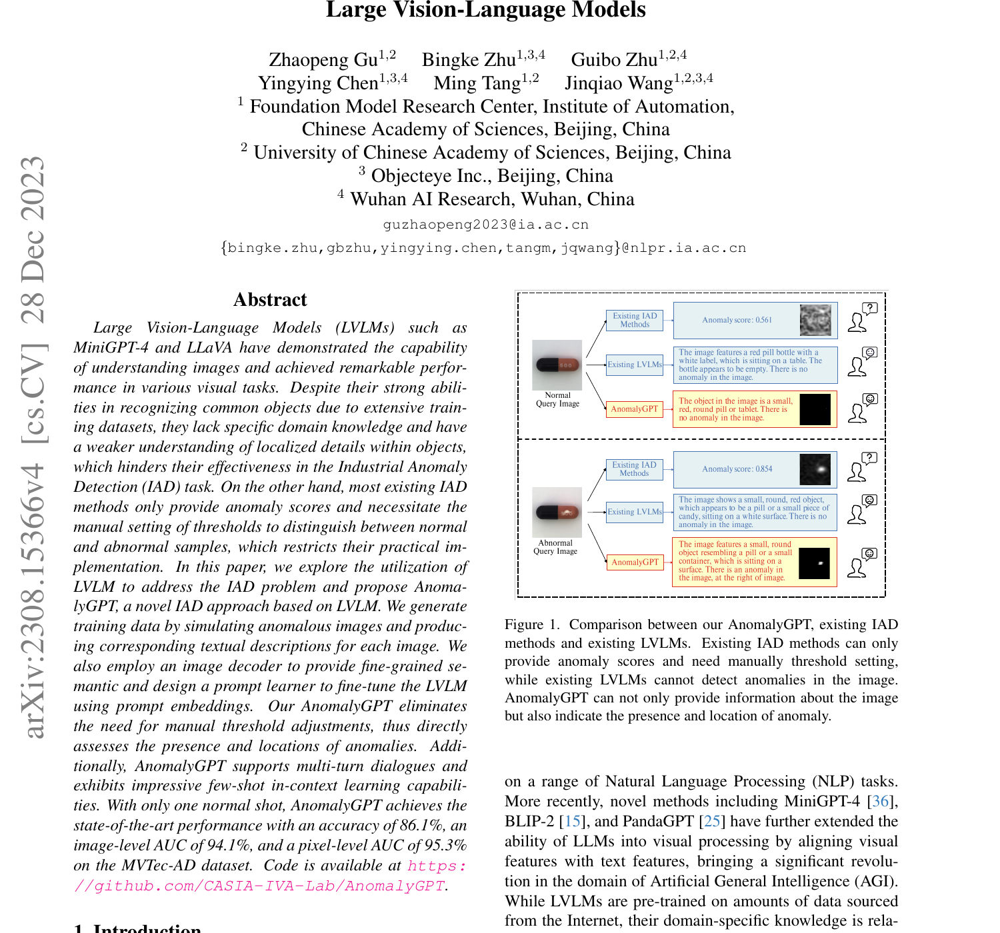
4.2 最小 demo
先用 25 行手写代码体会"造异常"的核心思想——把一块图像从随机位置 cut 下来,paste 到另一处。这是 CutPaste 思路的最朴素版本,也是 AnomalyGPT 合成 pipeline 的"骨架"。
import numpy as np
def toy_cutpaste(img, patch_h=32, patch_w=32, seed=0):
"""Generate synthetic (normal, anomaly, mask) triplet via random cut-paste."""
rng = np.random.default_rng(seed)
H, W, _ = img.shape
# 1. Crop a random patch (the "anomaly source")
src_y, src_x = rng.integers(0, H - patch_h), rng.integers(0, W - patch_w)
patch = img[src_y:src_y+patch_h, src_x:src_x+patch_w].copy()
# 2. Pick a different paste location
dst_y, dst_x = rng.integers(0, H - patch_h), rng.integers(0, W - patch_w)
while abs(dst_y - src_y) < patch_h and abs(dst_x - src_x) < patch_w:
dst_y, dst_x = rng.integers(0, H - patch_h), rng.integers(0, W - patch_w)
# 3. Compose anomaly image + binary mask
anomaly = img.copy()
anomaly[dst_y:dst_y+patch_h, dst_x:dst_x+patch_w] = patch
mask = np.zeros((H, W), dtype=np.uint8)
mask[dst_y:dst_y+patch_h, dst_x:dst_x+patch_w] = 1
return img, anomaly, mask
# Demo: feed a "normal" gray image, get a paired (clean, broken, mask)
normal = np.full((128, 128, 3), 180, dtype=np.uint8)
normal[40:80, 40:80] = 220 # synthetic object
clean, broken, m = toy_cutpaste(normal, patch_h=20, patch_w=20)
print("clean unique:", np.unique(clean).size, "broken unique:", np.unique(broken).size)
print("mask coverage:", m.mean()) # fraction of pixels marked as anomaly
这段 demo 已经具备 paired data 的核心结构:(clean, broken, mask) 三元组,这正是 decoder 训练时的监督信号。AnomalyGPT 在此基础上加了 Perlin noise mask、Poisson blending 让边界自然、SAM 前景约束让 anomaly 落在物体上——这些是工程升级,概念没变。
4.3 正式化
把直觉里说的三件事写成数学。先是合成数据生成:
—— 翻译:取一张正常图 $x_n$,从同源或异源的另一张 $x_n'$ 上裁出一小块,贴到 $x_n$ 的某个位置;$M$ 是二值 mask,标出"哪些像素被换掉了",未被覆盖的像素保持原样。这一对 $(x_a, M)$ 就是后面 decoder 的训练对。
接着是 feature-matching decoder:它把 ViT 的多层特征 \(\{F_v^{(l)}\}_{l=1}^L\) 融合成一张 pixel-level anomaly heatmap \(\hat{m}\):
—— 翻译:每一层 ViT token (空间维度小,通常 $14\!\times\!14$ 或 $16\!\times\!16$) 都经过一个 per-layer 线性映射 $W_l$ 投到文本嵌入空间,沿层求和后上采样到原图尺寸,得到 $\hat{m}\in[0,1]^{H\times W}$。这条支路完全独立于 LLM 输出,补上了 LLM 给不出来的空间定位。
最后是总 loss——两条监督路径并行:
—— 翻译:左边两项 BCE + dice 监督 decoder 的 mask 输出与合成 ground-truth $m$ 一致,这是 dense prediction 的标配组合(BCE 看像素,dice 看区域重叠率)。右边 $\mathcal{L}_{\text{LM}}$ 是语言模型的 cross-entropy:给定视觉特征 $F_v$ 与 prompt embedding $E_p$,让 LLM 生成的回复贴近目标文本 $y$(例如 "Yes, there is a scratch in the upper-left area")。两条路径的梯度都经过 $F_v$,因此视觉特征会被同时拉向"空间定位"和"语言描述"两个目标。
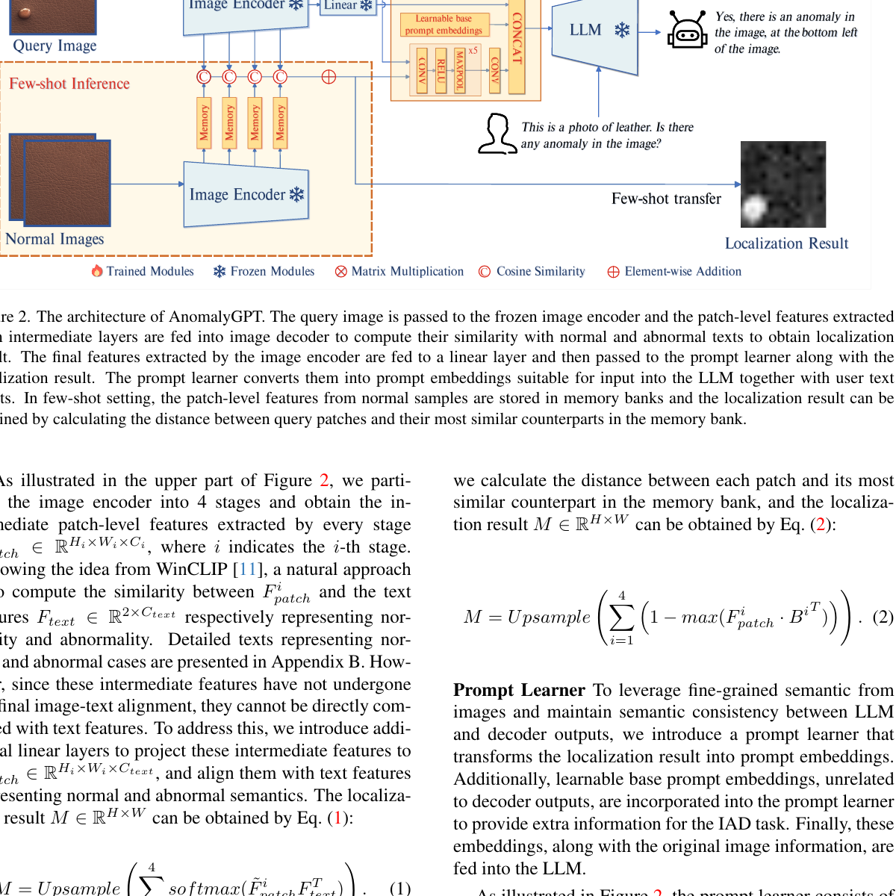
4.4 代码引用
第一段对应 §4.3 的式 (1)——合成异常的核心入口 patch_ex,从函数签名就能读出整套设计:支持 CutPaste / 自定义 width bounds / Poisson blending(cv2.NORMAL_CLONE 或 MIXED_CLONE)/ 可选跳过背景区域。
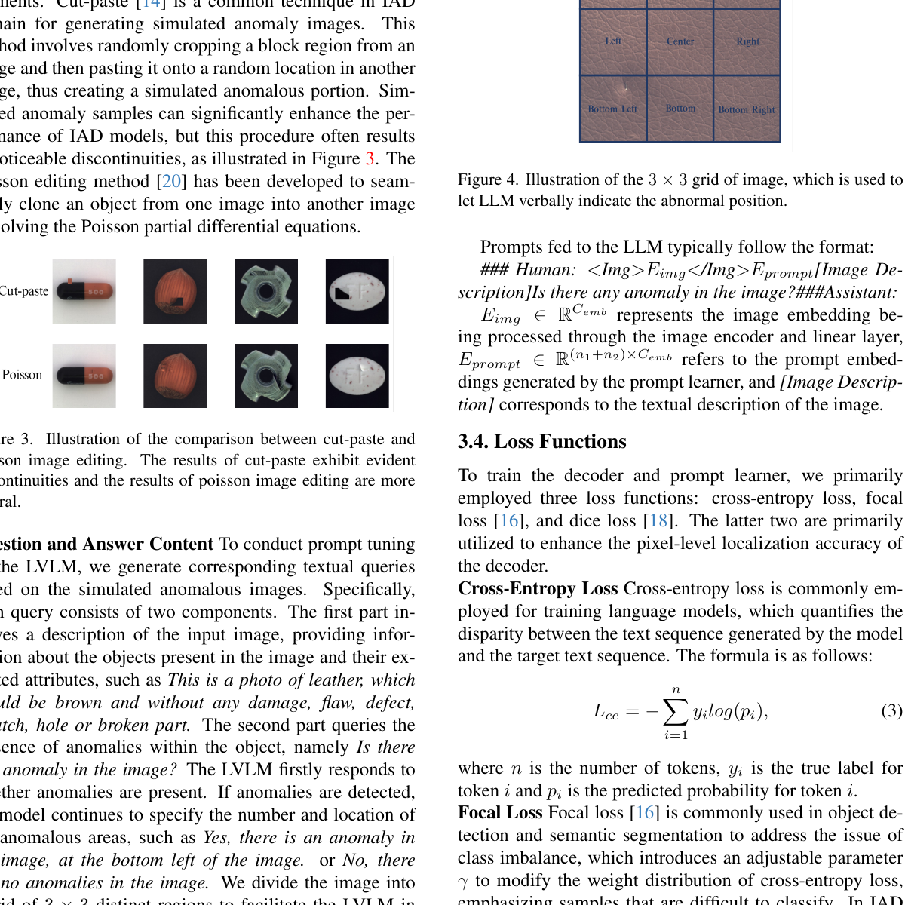
sources/repos/CASIA-IVA-Lab-AnomalyGPT/code/datasets/self_sup_tasks.py:L8-L42 — Synthetic anomaly generation: CutPaste + Perlin mask + Poisson blending
def patch_ex(ima_dest, ima_src=None, same=False, num_patches=1,
mode=cv2.NORMAL_CLONE, width_bounds_pct=((0.05,0.2),(0.05,0.2)), min_object_pct=0.25,
min_overlap_pct=0.25, shift=True, label_mode='binary', skip_background=None, tol=1, resize=True,
gamma_params=None, intensity_logistic_params=(1/6, 20),
resize_bounds=(0.7, 1.3), num_ellipses=None, verbose=True, cutpaste_patch_generation=False):
"""
Create a synthetic training example from the given images by pasting/blending random patches.
Args:
ima_dest (uint8 numpy array): image with shape (W,H,3) or (W,H,1) where patch should be changed
ima_src (uint8 numpy array): optional, otherwise use ima_dest as source
same (bool): use ima_dest as source even if ima_src given
mode: 'uniform', 'swap', 'mix', cv2.NORMAL_CLONE, or cv2.MIXED_CLONE what blending method to use
('mix' is flip a coin between normal and mixed clone)
num_patches (int): how many patches to add. the method will always attempt to add the first patch,
for each subsequent patch it flips a coin
width_bounds_pct ((float, float), (float, float)): min half-width of patch ((min_dim1, max_dim1), (min_dim2, max_dim2))
shift (bool): if false, patches in src and dest image have same coords. otherwise random shift
resize (bool): if true, patch is resampled at random size (within bounds and keeping aspect ratio the same) before blending
skip_background (int, int) or [(int, int),]: optional, assume background color is first and only interpolate patches
in areas where dest or src patch has pixelwise MAD < second from background.
label_mode: 'binary', 'continuous', 'intensity', 'logistic-intensity' (determines mask generation method)
cutpaste_patch_generation (bool): if set, implements CutPaste sampling (area 0.02-0.15, aspect ratio 0.3-3.3)
"""
# Poisson blending modes: cv2.NORMAL_CLONE or cv2.MIXED_CLONE
if mode == 'mix':
mode = (cv2.NORMAL_CLONE, cv2.MIXED_CLONE)[np.random.randint(2)]
if cutpaste_patch_generation:
# CutPaste variant: sample area ratio (0.02, 0.15), aspect ratio (0.3, 0.15)
width_bounds_pct = None
resize = False
skip_background = None
num_patches = 1
对照式 (1):ima_dest 对应 \(x_n\),ima_src 对应 \(x_n'\),width_bounds_pct 控制 patch 大小、shift 控制 paste 位置随机化、cv2.NORMAL_CLONE / MIXED_CLONE 实现 Poisson blending 让边界不突兀。label_mode 决定输出的 \(M\) 是 binary 还是 continuous(soft mask 在 dice loss 下更稳)。最后那段 cutpaste_patch_generation 分支让这一个函数可以同时回退到原始 CutPaste 配置——code path 的"开关"就是论文里"消融实验"的对应物。
第二段对应式 (2) 与 prompt path——LinearLayer 是 decoder 的全部("多层特征 → 文本嵌入空间"),PromptLearner 把图像本身编码为可学习的 prompt token,与 base prompt 拼接后送给 LLM。
sources/repos/CASIA-IVA-Lab-AnomalyGPT/code/model/AnomalyGPT_models.py:L17-L73 — Lightweight visual-textual feature decoder + prompt learner
class LinearLayer(nn.Module):
"""Maps multi-layer visual features (from ImageBind) to text embedding space."""
def __init__(self, dim_in, dim_out, k):
super(LinearLayer, self).__init__()
self.fc = nn.ModuleList([nn.Linear(dim_in, dim_out) for i in range(k)])
def forward(self, tokens):
"""Project k image encoder layers to text embedding dim for matching."""
for i in range(len(tokens)):
if len(tokens[i].shape) == 3:
tokens[i] = tokens[i].transpose(0,1)
tokens[i] = self.fc[i](tokens[i][:, 1:, :]) # Skip CLS token
else:
B, C, H, W = tokens[i].shape
tokens[i] = self.fc[i](tokens[i].view(B, C, -1).permute(0, 2, 1).contiguous())
return tokens
class PromptLearner(nn.Module):
"""Learns image-adaptive prompt embeddings via lightweight conv stack + base prompts."""
def __init__(self, dim_in, dim_out) -> None:
super().__init__()
self.meta_net = nn.Sequential(
nn.Conv2d(dim_in, dim_in * 4, kernel_size=3, padding=1),
nn.ReLU(inplace=True),
nn.MaxPool2d(2), # 112 * 112
nn.Conv2d(dim_in * 4, dim_in * 16, kernel_size=3, padding=1),
nn.ReLU(inplace=True),
nn.MaxPool2d(2), # 56 * 56
nn.Conv2d(dim_in * 16, dim_in * 64, kernel_size=3, padding=1),
nn.ReLU(inplace=True),
nn.MaxPool2d(2), # 28 * 28
nn.Conv2d(dim_in * 64, dim_in * 256, kernel_size=3, padding=1),
nn.ReLU(inplace=True),
nn.MaxPool2d(2), # 14 * 14
nn.Conv2d(dim_in * 256, dim_in * 1024, kernel_size=3, padding=1),
nn.ReLU(inplace=True),
nn.MaxPool2d(2), # 7 * 7
nn.Conv2d(dim_in * 1024, dim_out, kernel_size=5, padding=0),
)
self.base_prompts = nn.Parameter(torch.randn((9, dim_out)), requires_grad=True)
def forward(self, input):
"""Extract image-specific prompts from input image and concat with learnable base prompts."""
B, C, H, W = input.shape
img_prompts = self.meta_net(input) # [B, dim_out, 1, 1]
img_prompts = img_prompts.reshape(B, 4096, 9).transpose(-2, -1) # [B, 9, 4096]
output = torch.cat([self.base_prompts.expand(B, -1, -1), img_prompts], dim=1) # [B, 18, 4096]
return output
对照式 (2):LinearLayer 的 nn.ModuleList 就是 \(\{W_l\}_{l=1}^L\)——一个 ViT 层一个线性映射,把不同语义粒度(浅层纹理 / 深层物体)统一对齐到文本空间,然后送给 cosine 相似度去算 \(\hat{m}\) 的雏形。注意 tokens[i][:, 1:, :] 主动跳掉了 CLS token——因为 CLS 是全局,正好是 §1 说的"全局 pooling 稀释 defect"的元凶。PromptLearner 则把整张图压成 9 个 image-adaptive token,与 base_prompts (9 个全局 token, 类似 CoOp 的 [V1][V2]…) 拼成 18 个 token 喂给 LLM——这就是式 (3) 里的 \(E_p\)。两者只增加几百万参数,LLM 的 7B 主体一字不动。
第三段是 PEFT 配置,把"训练策略"明确写在 YAML 里——LoRA rank 32、只训练 PromptLearner + decoder + LoRA adapter、LLM 主权重 frozen。配置文件这一块尤为关键,因为它把"为什么不会 catastrophic forget"具体化成了几行可读的参数。
sources/repos/CASIA-IVA-Lab-AnomalyGPT/code/config/openllama_peft.yaml:L1-L22 — PEFT config: LoRA + freeze LLM main weights, train only prompt embeddings + decoder
# generation hyper-parameters
max_len: 512
penalty_alpha: 0.6
top_k: 10
top_p: 0.7
random_prefix_len: 5
sample_num: 2
decoding_method: sampling
generate_len: 512
# lora hyper-parameters
lora_r: 32 # LoRA rank (low-rank decomposition)
lora_alpha: 32 # LoRA scaling factor
lora_dropout: 0.1 # LoRA dropout for regularization
# training configuration
train:
seed: 42
warmup_rate: 0.1
epochs: 50
max_length: 1024 # Max input length for LLM
对照 §4.5 即将展开的"为什么 PEFT"问题:lora_r: 32 + lora_alpha: 32 意味着 LoRA 注入到 attention 层后,可训练参数量大致是主权重的千分之几;epochs: 50 也只能在这几百万参数上反复优化,LLM 主权重根本没有梯度。random_prefix_len: 5 是训练时在 instruction 前随机插入前缀的数据增强 trick,让模型不要 overfit 到固定 prompt 句式。这套配置 + DeepSpeed ZeRO-2 + activation checkpointing 让 AnomalyGPT 在单张 A100 上能完成训练——这件事本身就是"小数据 + LVLM"路线工程上可行的证据。
4.5 洞察
- **(a) Prompt embedding + LoRA > 全参数 fine-tune。**工业 AD 数据量只有几百到几千张,直接 fine-tune 7B LLM 会让通用语言能力(describe / reason / dialogue)迅速劣化——这就是 catastrophic forgetting。PromptLearner 把"任务知识"塞进 18 个 token,LoRA 把"细微调整"塞进 rank-32 矩阵,主权重完全冻结,通用知识因此被保留。
- **(b) Decoder 不是冗余,而是务实补丁。**LLM 的输出是 token 概率,即便答出"左上有划痕"也无法给出像素级 mask;反之,decoder 出 mask 但不会说话。两条支路并行训练,既让视觉特征 \(F_v\) 同时服务两个目标,也让最终系统能在 inference 阶段同时给出 heatmap + dialogue——这是 threshold-free 的关键。
- **(c) 合成数据足以撑起这条路线。**ImageBind/CLIP 视觉编码器在十亿级自然图像上预训练,工业图像虽然 domain 不同,但只是"narrow domain shift"——形状、纹理、光照都没跳出自然图像分布。在此基础上,几千张 cut-paste + Poisson blending 合成异常已经足以教会 decoder "哪里像缺陷"。这也解释了为什么 IAD 不需要像 medical imaging 那样收集真实异常样本。
- **(d) 两个目标必须平衡。**式 (3) 把 mask reconstruction 和 LM cross-entropy 放在同一个 loss 里——若 \(\mathcal{L}_{\text{LM}}\) 权重过大,decoder 会被"挤"得不会预测 mask;若 mask loss 过大,LLM 学到的是"贴瓷砖"而不是"描述异常"。AnomalyGPT 通过 PEFT 的天然不对称(只有 prompt + decoder + LoRA 可训)隐式做了这件事:语言能力的主权重保护住了,梯度主要打在 decoder 上,平衡是从架构层面而非超参层面解决的。
5. 数据制作的演进 — 从 CutPaste 到 IMDD-1M
5.1 直觉
工业检测最致命的痛点不是模型,是数据: real defect 每千件可能才出一两件,标注还要老师傅亲自圈像素。于是社区想了一个偷懒办法 —— 造缺陷比找缺陷便宜: 拿大量 normal 图主动破坏,造出成对的 (clean, broken) 样本,免费拿到 mask、文本描述、甚至 CoT 推理链。但事情没那么简单: 越简单的合成方法,得到的 "defect" 离真实工业缺陷越远 —— 一个直接粘贴的方块,纹理、光照、边界都对不上,模型学到的只是 "找色块" 而不是 "找异常"。于是这条数据演进线的本质就是: 让合成的 defect 越来越像真的、标注越来越自动化、规模越来越大、标签越来越结构化。
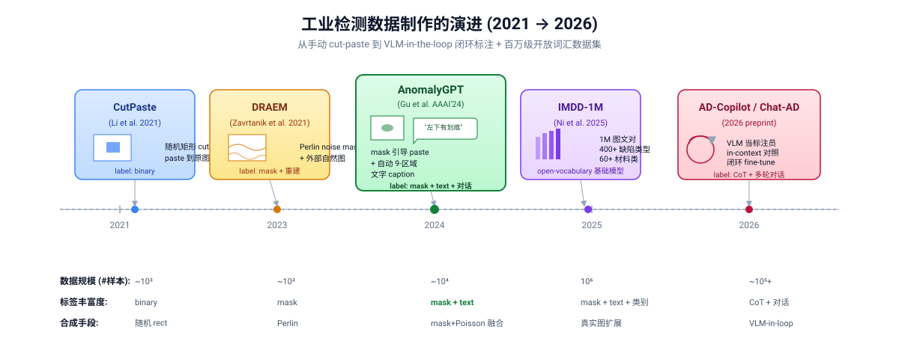
5.2 最小 demo
把三代合成策略压成 30 行代码,作用在同一张 toy normal 图上,直观对照"合成的精细度"如何递增:
import numpy as np
H, W = 224, 224
x_n = np.full((H, W, 3), 180, dtype=np.uint8) # 一张 "normal" 灰板
x_s = np.random.randint(0, 255, (H, W, 3), np.uint8) # 外部 "缺陷源" 图
# (1) CutPaste — 随机矩形,直接覆盖
def cutpaste(x_n):
h, w = np.random.randint(20, 60, size=2)
y, x = np.random.randint(0, H-h), np.random.randint(0, W-w)
out = x_n.copy()
src = x_n[np.random.randint(0, H-h):, np.random.randint(0, W-w):][:h, :w]
out[y:y+h, x:x+w] = src # 硬粘贴,边界突变
return out
# (2) DRAEM — Perlin 风格的连续 mask + 外部自然图像
def draem(x_n, x_s):
yy, xx = np.mgrid[0:H, 0:W] / H
noise = (np.sin(8*xx + 3*yy) + np.cos(5*yy - 2*xx)) # 用 sin/cos 近似 Perlin
M = (noise > 0.3).astype(np.float32)[..., None]
return (M * x_s + (1 - M) * x_n).astype(np.uint8) # 软 mask + 自然纹理
# (3) AnomalyGPT-style — 椭圆 mask + 限制在前景 + (示意) Poisson 融合
def anomalygpt(x_n, x_s, fg_mask): # fg_mask: 前景掩码
y0, x0 = np.random.randint(40, H-40), np.random.randint(40, W-40)
yy, xx = np.mgrid[0:H, 0:W]
a, b = np.random.randint(15, 40, size=2)
M = (((xx-x0)/a)**2 + ((yy-y0)/b)**2 <= 1).astype(np.float32)
M = (M * fg_mask)[..., None] # 必须落在前景上
# Poisson 融合等价于求解 ∇x_a = M·∇x_s + (1-M)·∇x_n,这里用线性近似
return (M * x_s + (1 - M) * x_n).astype(np.uint8)
fg = ((np.mgrid[0:H, 0:W] - H/2)**2).sum(0) < (H/3)**2 # 圆形前景
samples = [cutpaste(x_n), draem(x_n, x_s), anomalygpt(x_n, x_s, fg.astype(np.float32))]
三个函数共享同一个 x_n,差异在 mask 的形态 (矩形 → 软噪声 → 椭圆+前景约束) 和源像素 (自图复制 → 外部自然图像 → 前景内自然图像) 上递进。第三种已经接近 AnomalyGPT 的真实管线,只差把线性叠加换成下文要讲的 Poisson 融合。
5.3 正式化
三代合成方法可以用统一的 mask-blending 框架写出,差异全在 mask \(M\) 的来源和 blending 算子上。
(1) CutPaste (2021) — 随机矩形 mask,源是图像自身的另一块:
—— 翻译: $x_a$ 是合成的异常图,$M_{\text{rect}}$ 是一个随机矩形二值 mask,$x_s$ 是原图随机切下的一块作为 "源",$x_n$ 是 normal 底图。本质就是"硬粘贴",边界一定是直角突变。
(2) DRAEM (2021) — Perlin noise 阈值化得到的不规则 mask + 外部自然图像 (ImageNet 等):
—— 翻译: mask 来自 Perlin 噪声阈值化,边界自然弯曲;$x_s$ 不再是自身,而是从外部自然图像分布采样,引入丰富纹理。形状自然了,但 blending 仍是线性,边界处仍有色差。
(3) AnomalyGPT (2024) — 椭圆/前景约束 mask + Poisson seamless cloning:
—— 翻译: 不直接合成像素,而是合成梯度场,然后在 mask 边界 $\partial \Omega$ 处强制等于 normal 图,通过求解 Poisson 方程反推像素值。这样融合边界处颜色平滑过渡,人眼几乎看不出粘贴痕迹 —— 这是 OpenCV seamlessClone 的核心。
从 (1) 到 (3),mask 越来越"知道前景在哪",blending 算子从硬覆盖 → 线性混合 → 偏微分方程求解。再往后 (IMDD-1M, 2025) 已经不再是单张图合成,而是从真实工业图库中收集 + VLM 自动生成图文对,规模直接跳到 1M 量级。
5.4 代码引用
AnomalyGPT 的合成管线分两步: 先生成椭圆/矩形 mask,再用 Poisson seamlessClone 把源 patch 无缝粘到 normal 底图上。
sources/repos/CASIA-IVA-Lab-AnomalyGPT/code/datasets/self_sup_tasks.py:L168-L219 — Anomaly mask synthesis (random rectangle / ellipse shapes) + image blending with alpha composition
if num_ellipses is not None:
ellipse_min_dim1 = min_width_dim1
ellipse_min_dim2 = min_width_dim2
ellipse_max_dim1 = max(min_width_dim1 + 1, patch_width_dim1 // 2)
ellipse_max_dim2 = max(min_width_dim2 + 1, patch_width_dim2 // 2)
patch_mask = np.zeros((coor_max_dim1 - coor_min_dim1, coor_max_dim2 - coor_min_dim2), dtype=np.uint8)
x = np.arange(patch_mask.shape[0]).reshape(-1, 1)
y = np.arange(patch_mask.shape[1]).reshape(1, -1)
for _ in range(num_ellipses):
theta = np.random.uniform(0, np.pi)
x0 = np.random.randint(0, patch_mask.shape[0])
y0 = np.random.randint(0, patch_mask.shape[1])
a = np.random.randint(ellipse_min_dim1, ellipse_max_dim1)
b = np.random.randint(ellipse_min_dim2, ellipse_max_dim2)
ellipse = (((x-x0)*np.cos(theta) + (y-y0)*np.sin(theta))/a)**2 + (((x-x0)*np.sin(theta) + (y-y0)*np.cos(theta))/b)**2 <= 1
patch_mask |= ellipse
patch_mask = patch_mask[...,None]
else:
patch_mask = np.ones((coor_max_dim1 - coor_min_dim1, coor_max_dim2 - coor_min_dim2, 1), dtype=np.uint8)
# ... later, image blending via Poisson cloning (L262-281):
elif mode in [cv2.NORMAL_CLONE, cv2.MIXED_CLONE]:
int_factor = np.uint8(np.ceil(factor * 255))
patch_mask_scaled = int_factor * patch_mask
patch_mask_scaled[0], patch_mask_scaled[-1], patch_mask_scaled[:,0], patch_mask_scaled[:,-1] = 0, 0, 0, 0
center = (coor_max_dim2 - (coor_max_dim2 - coor_min_dim2) // 2, coor_min_dim1 + (coor_max_dim1 - coor_min_dim1) // 2)
patchex = cv2.seamlessClone(src, ima_dest, patch_mask_scaled, center, mode)
对照: 椭圆 mask 通过旋转角 \(\theta\) 和半轴 \((a,b)\) 参数化,for 循环叠加多个椭圆生成不规则区域 —— 对应 §5.3 公式 (3) 中的 \(M\)。cv2.seamlessClone 内部就是求解 Poisson 方程 \(\nabla x_a = M \cdot \nabla x_s + (1-M) \cdot \nabla x_n\),边界强制为 normal 图 —— mask 四条边手动置零 (patch_mask_scaled[0], patch_mask_scaled[-1], ...) 正是为了保证 \(x_a|_{\partial\Omega}=x_n|_{\partial\Omega}\) 的 Dirichlet 边界条件。
但 AnomalyGPT 真正的创新不止于像素层面 —— 它把合成同时变成了带语言标签的对话样本:
sources/repos/CASIA-IVA-Lab-AnomalyGPT/code/datasets/mvtec.py:L126-L184 — Textual description / instruction generation for synthetic anomaly samples (position mapping + multi-anomaly handling)
if len(centers) > 0:
position = []
for center in centers:
center_x = center[0] / 224
center_y = center[1] / 224
# Map center coordinates to 9-region grid: top-left, top, top-right, left, center, right, bottom-left, bottom, bottom-right
if center_x <= 1/3 and center_y <= 1/3:
position.append('top left')
elif center_x <= 1/3 and center_y > 1/3 and center_y <= 2/3:
position.append('top')
# ... [7 more position assignments omitted for brevity]
# Generate conversational pairs
conversation_normal = []
conversation_normal.append({"from":"human","value": describles[class_name] + " Is there any anomaly in the image?"})
conversation_normal.append({"from":"gpt","value":"No, there is no anomaly in the image."})
conversation_abnormal = []
conversation_abnormal.append({"from":"human","value": describles[class_name] + " Is there any anomaly in the image?"})
if len(centers) > 1:
abnormal_describe = "Yes, there are " + str(len(centers)) + " anomalies in the image, they are at the "
for i in range(len(centers)):
if i == 0:
abnormal_describe += position[i]
elif i == 1 and position[i] != position[i-1]:
abnormal_describe += ", " + position[i]
else:
abnormal_describe += " and " + position[i] + " of the image."
else:
abnormal_describe = "Yes, there is an anomaly in the image, at the " + position[0] + " of the image."
conversation_abnormal.append({"from":"gpt","value":abnormal_describe})
对照: 这是一段"廉价定位"的工程妙招 —— 既然合成时已经知道每个 anomaly 的中心坐标 centers,就把 224×224 的图划成 3×3 共 9 个区域,把像素坐标 quantize 成 9 个文本标签 ("top left" / "top" / ... / "bottom right")。整张图 → 一对对话: 用户问"是否有异常",GPT 答"有,在左上"。合成数据瞬间从 (image, binary_label) 升级到 (image, instruction, free-text answer),直接喂给 LLM 做指令微调。这就是合成像素 + 自动标签闭环的关键一环。
5.5 洞察
- 合成 / 真实混合比是 trade-off,不是 free lunch。 AnomalyGPT 等论文的经验值大约是 50/50 到 70/30 (合成 / 真实): 合成多了模型学到"合成 artifact"而非"真实缺陷",合成少了样本不够。这也解释了为什么纯合成的 zero-shot 数字始终比 few-shot 的真实样本低几个点。
- 大规模 ≠ 高质量,但两者各有不可替代的角色。 IMDD-1M (1M 图文对) 这类百万级数据集对 foundation model 的 pretrain 是必须的 —— 大词汇覆盖、跨领域泛化都来自规模。但到 fine-tune 阶段反而是"小而精"赢: 一千张老师傅亲手标的 MVTec real defect 比一百万张 GPT-4V 自动 caption 更有用。这是个看起来反直觉但已被多次复现的发现。
- VLM-in-the-loop 标注闭环 (AD-Copilot Chat-AD)。 既然 VLM 已经能看懂工业缺陷,何不让它给自己造的图打标签? 流程是: 合成 anomaly → 喂给 GPT-4V 生成 caption + reasoning chain → 反过来 fine-tune 下一代 VLM。这条 self-improving loop 已经在 2025+ 工作中出现,正在把标注成本进一步压到接近零。
- 9-region quantization 是"够用就行"的工程范例。 不需要精确像素 mask,只需要"左上 / 中间 / 右下" 9 个粗位置,LVLM 学到的定位能力依然 useful —— 因为下游应用 (人工复检、报警系统) 本来就只需要粗粒度坐标。把任务难度匹配到下游需求,而非追求 metric SOTA,是这一代工业 VLM 系统设计的精髓。
6. 让 VLM 看清细节的技术谱系
6.1 直觉
"缺陷大小" 是个相对量。一根头发丝落在手机面板上, 是要 reject 的大缺陷; 同样一根头发掉在马路监控里, 只是噪点。同一个 VLM 要在不同尺度上同时 "看清", 单靠把图压到 224×224 喂 CLIP 必然死: 全局 pool 把局部信号稀释、ViT 的 attention 又天然倾向于 [CLS] 这种全局表征。
纵观 2023–2026 的 SOTA, 让 VLM 看清细节其实只有三种独立的、可叠加的手段, 我们把它叫做 细粒度三层 stack: 分辨率层 (多放大镜 — 把图切成多尺度窗口/tile 各自 encode)、注意力层 (扫一遍 — 改 ViT 内部 attention 让它聚焦局部)、decoder 层 (精修 — 在 ViT 后面外挂一个小型上采样 decoder 做 dense prediction)。WinCLIP 占了第一层, AnomalyCLIP 在前两层各占一脚, AnomalyGPT 把三层全栈一遍。SOTA 不是某个 trick 单独取胜, 而是把这三种正交手段堆起来。
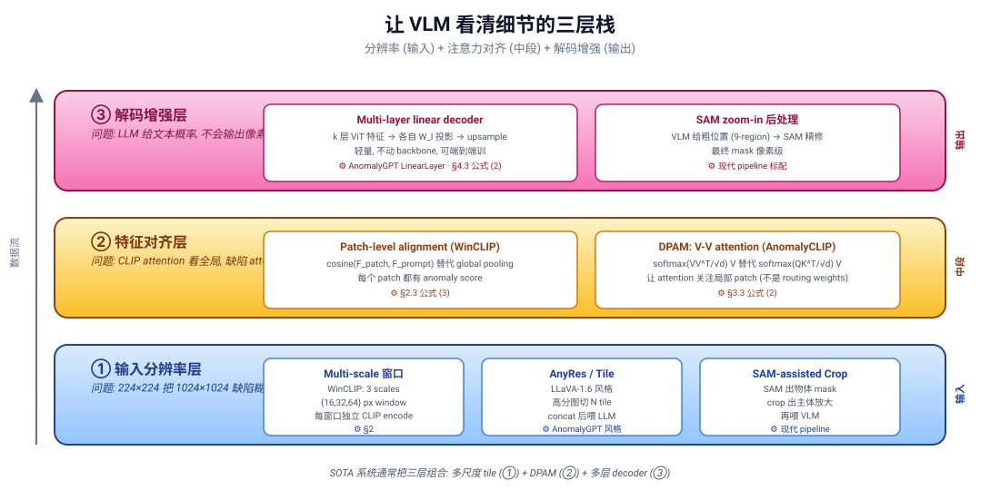
6.2 最小 demo
下面用一段不到 30 行的 PyTorch, 把 "高分辨率 tile 切片 encode" 与 "整图 resize 后一次 encode" 做并排对比, 直观看到为什么 tile 路径能保留更多局部细节。
import torch, torch.nn.functional as F
def encode_lowres(image, encoder):
# Method A: 整图直接 resize 到 224, 单次 encode
x = F.interpolate(image, size=224, mode="bilinear")
return encoder(x) # (1, D)
def encode_tiles(image, encoder, tile=512):
# Method B: 切 4 块 512×512 tile, 各自 resize 到 224 后 encode, concat
B, C, H, W = image.shape # H=W=1024
tiles = []
for y in (0, tile):
for x in (0, tile):
t = image[:, :, y:y+tile, x:x+tile] # (1,3,512,512)
t = F.interpolate(t, size=224, mode="bilinear")
tiles.append(encoder(t)) # (1, D)
return torch.cat(tiles, dim=0) # (4, D)
# 玩具实验: 用一个 1024×1024 输入, 在右下角 (768,768) 放一个 16×16 的"假缺陷" (亮斑)
image = torch.zeros(1, 3, 1024, 1024)
image[:, :, 768:784, 768:784] = 1.0
f_lowres = encode_lowres(image, encoder) # shape (1, D)
f_tiles = encode_tiles(image, encoder) # shape (4, D)
detail_signal_A = f_lowres.var(dim=-1).item() # 单 token 内的特征方差
detail_signal_B = f_tiles.var(dim=0).mean().item() # 跨 tile 的特征方差
print(detail_signal_A, "vs", detail_signal_B) # B 远大于 A: tile 保住了局部差异
关键点: Method A 的 16×16 亮斑被 resize 缩成不到 4 像素, 早就被插值平均掉了; Method B 让亮斑独占其中一个 tile 的 1/32, 信号被显著放大。"细节" 不是分辨率本身, 而是 token 容量分给局部的预算。
6.3 正式化
把三层 stack 各自写成公式:
(1) 分辨率层 — 多尺度窗口聚合 (复用 §2 的 WinCLIP, 但 framing 成 "分辨率"):
—— 翻译: 对每个尺度 $k$ (大/中/小窗口), 在图像 $x$ 上枚举所有该尺度的窗口 $w$, 各自切出来送进 vision encoder $f_v$。所有尺度的特征并集 $F$ 就是 "多放大镜" 视图, 检测分数取最大值或平均。本质上是用空间冗余换 token 容量。
(2) 注意力层 — DPAM (V-V self-attention 替换) (复用 §3 但 framing 成 "注意力定位"):
—— 翻译: 标准 self-attention 用 $Q,K$ 决定每个 token 关注谁; DPAM 直接用 $V$ 自己跟自己算相似度, 让语义相近的 token 互相强化。其结果是对角线占主导的 attention map (diagonally prominent), 局部细节不会被远处的全局 token "抢走" 信号。
(3) decoder 层 — 多层特征线性 decoder (来自 §4 AnomalyGPT 的 LinearLayer):
—— 翻译: 取 ViT 中间若干层 $L$ 的 patch token 特征 $F_v^{(l)}$, 各层经独立 linear $W_l$ 投到统一维度后求和, 最后 upsample 到原图分辨率得到 dense anomaly map $\hat{m}$。外挂这个 decoder 是因为 LLM 输出文本概率而不输出 spatial mask, 必须用一个轻量旁路把像素级监督接回来。
6.4 代码引用
第一段, AnomalyCLIP 的 DPAM 实现 — 在不修改 ViT 主干权重的前提下, 把 attention map 的 \(Q,K\) 直接覆写成 \(V\):
sources/repos/zqhang-AnomalyCLIP/AnomalyCLIP_lib/AnomalyCLIP.py:L71-L94 — DPAM: V-V attention substitution for local-detail amplification
def forward(self, x):
B, N, C = x.shape
qkv = self.qkv(x).reshape(B, N, 3, self.num_heads, C // self.num_heads).permute(2, 0, 3, 1, 4)
q, k, v = qkv[0], qkv[1], qkv[2]
# original self-attention for the original path
attn_ori = (q @ k.transpose(-2, -1)) * self.scale
attn_ori = attn_ori.softmax(dim=-1)
attn_ori = self.attn_drop(attn_ori)
# replace k & q by v <-- DPAM: replaces Q,K with V
k = v
q = k
# self-attention, higher temperate for resnets performs better
attn = (q @ k.transpose(-2, -1)) * self.scale
attn = (attn).softmax(dim=-1)
attn = self.attn_drop(attn)
x_ori = (attn_ori @ v).transpose(1, 2).reshape(B, N, C)
x = (attn @ v).transpose(1, 2).reshape(B, N, C)
x = self.proj_drop(self.proj(x))
x_ori = self.proj_drop(self.proj(x_ori))
return [x, x_ori]
对照公式 (2): k = v; q = k 这两行就是 V-V 替换的全部, 把标准 attention 的 \(QK^\top\) 强行降为 \(VV^\top\)。注意作者还保留了一份 x_ori 走原始 \(Q,K\) 路径, 双路并行返回 — 上层的 fine-tune loss 只对 DPAM 那条路反传, 主干语义不被破坏。整个 "细节注意力定位" 的代码改动只有两行, 但需要前面对 ViT 内部矩阵流的精确理解才挑得出来。
第二段, AnomalyGPT 的多层 decoder — 把 ViT 多层特征各自 linear 投影后让上层 fuse:
sources/repos/CASIA-IVA-Lab-AnomalyGPT/code/model/AnomalyGPT_models.py:L17-L30 — Multi-layer feature decoder for pixel-level anomaly localization
class LinearLayer(nn.Module):
def __init__(self, dim_in, dim_out, k):
super(LinearLayer, self).__init__()
self.fc = nn.ModuleList([nn.Linear(dim_in, dim_out) for i in range(k)])
def forward(self, tokens):
for i in range(len(tokens)):
if len(tokens[i].shape) == 3:
tokens[i] = tokens[i].transpose(0,1)
tokens[i] = self.fc[i](tokens[i][:, 1:, :]) # skip cls token, project to dim_out
else:
B, C, H, W = tokens[i].shape
tokens[i] = self.fc[i](tokens[i].view(B, C, -1).permute(0, 2, 1).contiguous())
return tokens
对照公式 (3): self.fc 是 \(k\) 个独立线性层, 每个对应公式里的 \(W_l\); tokens[i][:, 1:, :] 这一刀剔掉 [CLS] token, 只保留 patch token — 因为 dense prediction 只关心空间位置。注意这里没有任何卷积、没有任何 nonlinear, 只是 per-layer linear: 作者赌的是 ViT 各层特征本来就富含 spatial 信息, 想做 dense prediction 不需要重型 decoder, 一层 linear + upsample 就够把 \(\hat{m}\) 解码出来。这是 AnomalyGPT 整套系统能轻量 (单卡 train, ~12B LLM 不动) 的关键决定之一。
6.5 洞察
- 分辨率 ↑ → token 数 ↑ → 算力 quadratic ↑, 全栈高分辨率不可行, 必须 sparse 设计 — 要么 windowing (WinCLIP 多尺度滑窗), 要么 AnyRes (LLaVA-1.6 风格按图像 aspect ratio 切 tile, 每 tile 独立 ViT encode 后 concat), 要么先 SAM zoom-in 再喂 VLM。把算力花在 "可能有缺陷的区域" 上, 而不是均匀挥霍。
- ViT 比 CNN 更适合这套打法。CNN 的特征要想做 dense prediction 必须 deconv / FPN 拼出 spatial 维度; 而 ViT 的 patch token 天然就是 spatial 位置编码, 多层 linear 投一下就能解出 mask (见 §6.4 的 LinearLayer 才 13 行)。这是工业 AD 几乎全面倒向 ViT backbone 的根本原因。
- 外挂 decoder 是务实补丁, 不是优雅设计。理想中 LLM 应该能直接吐出 mask, 但当前 LLM 只输出 next-token 概率, 完全没有 spatial output head。AnomalyGPT 选择 freeze LLM, 用旁路 LinearLayer + BCE/Dice 监督把像素信号引回来 — 这是 2024 的最佳工程选择, 但也意味着 LLM 端的 "描述能力" 与 decoder 端的 "定位能力" 是两条独立训练路径, 一致性靠 prompt embedding 桥接, 仍是开放问题。
- SOTA 系统通常 stack 全三层。AnomalyGPT 同时具备 (a) 高分辨率 ViT 输入 + (b) 多层 patch token 特征 + (c) LinearLayer dense decoder; 现代 IADGPT / AD-Copilot 进一步把 (a) 升级到 AnyRes tile + SAM zoom-in。"看清细节" 不是单点突破, 是三个正交手段的乘法叠加, 这也是后续 §7 讨论泛化时为什么 "用 prompt 学 abnormality 抽象概念" 与 "用 stack 看清局部 evidence" 是互补而非替代关系。
7. 泛化能力 — 从 Zero-shot 到 In-context
7.1 直觉
把工业检测放到“一个从没见过的新工厂、新零件、新缺陷”这种最严酷的场景下,可以问一个具体的问题:“学会一个 unknown 物体怎么坏” 有几种可能的方式?粗略地说,只有三条路:
- 看说明书 (zero-shot prompt-only) —— 一张图都没看过,只靠语言 prompt 描述什么叫 normal、什么叫 abnormal,代表是 WinCLIP(手写 prompt)和 AnomalyCLIP(可学习 prompt)。
- 看一张例图 (few-shot reference) —— 给几张正常样本作参考,query 图跟这些“参照物”比对,代表是 WinCLIP+ 的 reference bank 和 AnomalyGPT 的 in-context 对话。
- 看大量不相关 domain 后 transfer (cross-domain) —— 在 auxiliary domain(比如 MVTec)上学一套 prompt,然后直接搬到 medical CT、PCB、纺织等完全不同的 domain,代表是 AnomalyCLIP 在 17 个跨域数据集上的实验。
这三层不是互斥的,而是逐层退让的“算力 / 数据 / 通用性”权衡。整章的主线是:从 §2 WinCLIP 的手写 prompt → §3 AnomalyCLIP 的 object-agnostic prompt → 2025+ 的 in-context comparison(AD-Copilot Chat-AD、IADGPT),泛化能力的边界被持续推到“unknown 物体 + unknown 缺陷”这一极。
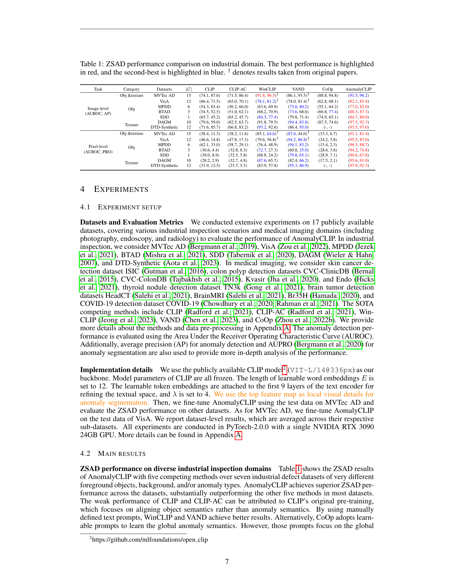
7.2 最小 demo
用 25 行 PyTorch 实现一个 few-shot reference bank 的最小版本 —— 把 4 张正常样本编码成 feature bank,query 图的 anomaly score 定义为“到 bank 中最近 normal feature 的距离”。这是 WinCLIP+ 与 AnomalyGPT in-context 模式的共同骨架。
import torch
import torch.nn.functional as F
D = 64 # feature dim
K = 4 # 参考的 normal 样本数
# 模拟一个 image encoder: 输入 [B, 3, H, W], 输出 [B, D]
# 这里直接用随机投影代替, 演示数据流
def fake_encoder(x):
return F.normalize(torch.randn(x.shape[0], D), dim=-1)
# 1) 构造 normal feature bank: K 张 normal 例图 → [K, D]
normal_images = torch.randn(K, 3, 224, 224)
bank = fake_encoder(normal_images) # [K, D], 已 L2 normalize
# 2) 编码 query 图
query_image = torch.randn(1, 3, 224, 224)
q = fake_encoder(query_image) # [1, D]
# 3) anomaly score = 1 - max cosine similarity to bank
sim = q @ bank.T # [1, K]
max_sim, nearest = sim.max(dim=1) # 最相似的那张正常图
anomaly_score = 1.0 - max_sim # 越大越异常
print(f"nearest normal idx: {nearest.item()}, "
f"anomaly score: {anomaly_score.item():.4f}")
把 fake_encoder 换成 CLIP-ViT 的 encode_image,bank 换成实际拍到的 4 张良品,就是 WinCLIP+ 论文里 K=4 normal-shot 的核心计算 —— 整个推理过程不需要任何 anomaly 标注,这正是 few-shot 在产线落地的吸引力。
7.3 正式化
(1) Zero-shot 评分。 WinCLIP / AnomalyCLIP 的核心是用一个 (anomaly prompt, normal prompt) 对在文本空间里建立两个锚点,然后在视觉特征 \(f_v(x)\) 上做 cosine 对比:
—— 翻译: 异常分数 = 图像特征跟 “异常 prompt” 的相似度,减去跟 “正常 prompt” 的相似度。$p_a, p_n$ 在 WinCLIP 中是手写模板(“a photo of a damaged {obj}”),在 AnomalyCLIP 中是 object-agnostic 的可学习 token。
(2) Few-normal-shot 参考库评分。 给定 \(K\) 张正常样本 \(\{x_1^n, \dots, x_K^n\}\),构造 feature bank \(B\),query 的 anomaly score 是到 bank 的最近距离:
—— 翻译: 异常 = “跟所有见过的正常样本都不像”。这个公式不区分 $K$ 是 1 还是 100,只要 $K \gt 0$ 就成立,在 $K=0$ 时退化成纯 zero-shot。
(3) Cross-domain prompt transfer。 AnomalyCLIP 的训练范式是:在 auxiliary domain \(D_{aux}\)(比如 MVTec)上优化 prompt,然后在 target domain \(D_{tgt}\)(医学 / PCB / 纺织)上 不再训练 直接部署:
—— 翻译: 只在源域学 prompt,目标域 zero-shot 用。前提是 $p$ 编码的是 abnormality 概念 而非 object identity,否则换域立刻崩 —— 这正是 object-agnostic prompt 的设计目的。
7.4 代码引用
(a) AnomalyCLIP 的 cross-dataset 评测主循环。 这段代码的关键是:模型加载之后只跑 一次 prompt_learner 算出 text features,然后整个 target dataset 的所有图像都共享这套 prompt —— 这正是 cross-domain transfer 在工程上能 work 的地方,模型从 train 到 test 完全不再 fine-tune。
sources/repos/zqhang-AnomalyCLIP/test.py:L31-L113 — Cross-dataset zero-shot 评测主循环
prompt_learner = AnomalyCLIP_PromptLearner(model.to("cpu"), AnomalyCLIP_parameters)
checkpoint = torch.load(args.checkpoint_path)
prompt_learner.load_state_dict(checkpoint["prompt_learner"])
prompt_learner.to(device)
model.to(device)
model.visual.DAPM_replace(DPAM_layer = 20)
prompts, tokenized_prompts, compound_prompts_text = prompt_learner(cls_id = None)
text_features = model.encode_text_learn(prompts, tokenized_prompts, compound_prompts_text).float()
text_features = torch.stack(torch.chunk(text_features, dim = 0, chunks = 2), dim = 1)
text_features = text_features/text_features.norm(dim=-1, keepdim=True)
model.to(device)
for idx, items in enumerate(tqdm(test_dataloader)):
image = items['img'].to(device)
with torch.no_grad():
image_features, patch_features = model.encode_image(image, features_list, DPAM_layer = 20)
image_features = image_features / image_features.norm(dim=-1, keepdim=True)
text_probs = image_features @ text_features.permute(0, 2, 1)
text_probs = (text_probs/0.07).softmax(-1)
text_probs = text_probs[:, 0, 1]
anomaly_map_list = []
for idx, patch_feature in enumerate(patch_features):
if idx >= args.feature_map_layer[0]:
patch_feature = patch_feature/ patch_feature.norm(dim = -1, keepdim = True)
similarity, _ = AnomalyCLIP_lib.compute_similarity(patch_feature, text_features[0])
similarity_map = AnomalyCLIP_lib.get_similarity_map(similarity[:, 1:, :], args.image_size)
anomaly_map = (similarity_map[...,1] + 1 - similarity_map[...,0])/2.0
anomaly_map_list.append(anomaly_map)
对照 §7.3 公式 (1):text_probs = image_features @ text_features.permute(0, 2, 1) 就是 \(\cos(f_v, f_t(p))\),对 normal/abnormal 两个 prompt 做 softmax 就是 \(s_{ZS}\) 的概率化版本。整段循环不存在 “if domain == medical: do something_different” 的分支 —— 这就是 cross-domain 的代码层面证据。
(b) WinCLIP 的 few-shot 参考库构建与匹配。 这段是 §7.2 demo 的工业版:把 normal 图按多尺度切窗口,在每个 scale 上各维护一个 visual gallery,query 进来时取 patch-level 最大 cosine 相似度,再 \(1-\text{sim}\) 作 anomaly score。
sources/repos/caoyunkang-WinClip/WinCLIP/model.py:L143-L244 — Few-normal-shot reference bank: 构建与查询
def build_image_feature_gallery(self, normal_images):
self.visual_gallery = []
visual_features = self.encode_image(normal_images)
for scale_index in range(len(self.scale_begin_indx)):
if scale_index == len(self.scale_begin_indx) - 1:
scale_features = visual_features[self.scale_begin_indx[scale_index]:]
else:
scale_features = visual_features[self.scale_begin_indx[scale_index]:self.scale_begin_indx[scale_index+1]]
self.visual_gallery += [torch.cat(scale_features, dim=0)]
def calculate_visual_anomaly_score(self, visual_features):
N = visual_features[0].shape[0]
scale_anomaly_scores = []
token_anomaly_scores = torch.zeros((N,self.grid_size[0] * self.grid_size[1]))
token_weights = torch.zeros((N, self.grid_size[0] * self.grid_size[1]))
cur_scale_indx = 0
cur_visual_gallery = self.visual_gallery[cur_scale_indx]
for indx, (features, mask) in enumerate(zip(visual_features, self.masks)):
normality_score = 0.5 * (1 - (features @ cur_visual_gallery.T).max(dim=1)[0])
normality_score = normality_score.cpu()
对照 §7.3 公式 (2):(features @ cur_visual_gallery.T).max(dim=1)[0] 就是 \(\max_{b \in B}\cos(f_v(x), b)\),然后 \(0.5 \cdot (1 - \text{max sim})\) 把它从 cosine 距离改造成 [0, 1] 范围的 anomaly score。多尺度的 scale_anomaly_scores 列表正是 §2 WinCLIP 多窗口聚合在 few-shot 场景下的复用 —— WinCLIP+ 等于 WinCLIP × few-shot。
7.5 洞察
- Prompt learning 为什么比 fine-tune 泛化更好? 看参数量:CoOp / AnomalyCLIP 学的是 ~10K 个 prompt token,而全参 fine-tune ViT-L/14 是 ~300M。低三个数量级意味着 prompt 几乎不可能 overfit auxiliary domain 的具体物体 —— 它最多只能编码“abnormality 概念”,这恰好就是我们想要的 domain-invariant 信号。
- Industrial → medical 真的能 work,是个 surprise。 这件事先验上不该 work:工业图像和医学 CT 的纹理统计、光照、背景完全不同。但 AnomalyCLIP 在 17 个跨域数据集上 zero-shot 全面胜出,说明 “偏离正常” 这件事在视觉空间里有 object-agnostic 的几何特征 —— prompt 学到的是“分布外”这个概念的 prior,而不是任何具体物体。这点跟 §3 的 object-agnostic 设计是同一枚硬币的两面。
- Test-time adaptation 雏形:in-context comparison。 2025-2026 的代表作 AD-Copilot 的 Chat-AD 模块给出了下一代范式 —— 模型在 forward 时同时接收一对
(normal_ref, query),让 cross-attention 在网络内部完成 “参照物比对”,而不是像 WinCLIP+ 那样在外部维护 feature bank。IADGPT 进一步把这种 in-context 比对扩展到多轮对话,query 可以反复提问 “跟参考图相比哪里不一样”。这相当于把 §7.2 demo 的两行匹配代码塞进了 LVLM 的注意力机制本身。 - Few-shot reference bank 的工程成本。 公式 (2) 是 \(O(K \cdot D)\) 存储 + \(O(K)\) 推理时间。当 \(K \to\) 数千张良品(典型大产线)时,GPU memory 直接吃满 —— 这正是 PatchCore 当年提出 coreset subsampling 的原始 motivation,在 VLM 时代依然成立。未来一定会看到 “learnable coreset for VLM reference bank” 这类工作出现,把 §5 的数据制作思路和 §7 的 few-shot 思路在同一个 loss 下端到端打通。
8. 演进时间线 + 现代前沿 + 落地建议
8.1 直觉
走到这里, §1-7 已经把 "为什么需要 VLM"、"看清细节怎么做"、"数据怎么造"、"泛化怎么打" 都铺开了。最后一个问题, 也是工程团队真正会问的问题, 是: "我手上这个项目, 到底选哪一个?"
这个问题的答案不是 "VLM 永远赢", 也不是 "传统永远便宜", 而是看三个量: 你有多少 normal 图、多少 anomaly 例子、能等多长的推理延迟。1000 张 normal + 锁死 SKU + 10ms 延迟 — 直接上 anomalib 的 PatchCore, 99% AUROC, 不需要 VLM。50 张 normal + 客户要求 "告诉我缺陷在哪、是什么" — AnomalyGPT few-shot。零样本、跨域(industrial → medical)、明天就要 demo — AnomalyCLIP。
下面这张时间线 + decision tree 把过去三年的 SOTA 横向铺开, 让选择变成 "看图对号入座" 而不是 "读完十篇 paper 才能下手"。
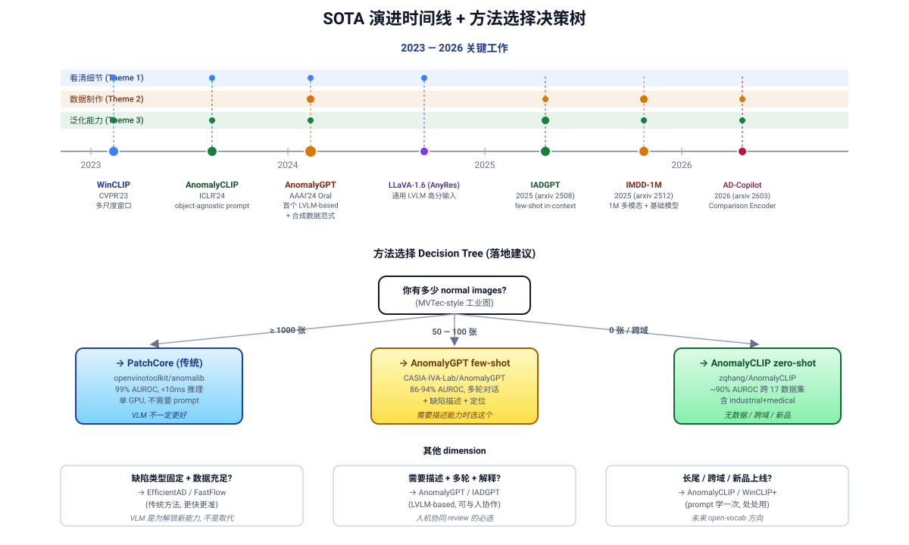
8.2 最小 demo
把 "选哪个方法" 这件事写成 30 行 Python — 输入是项目参数, 输出是 (推荐方法, repo URL, 期望 AUROC, 注意事项)。这不是真要跑的代码, 而是把 decision tree 落到文字。
def recommend_ad_method(
n_normal_images: int,
n_anomaly_examples: int,
latency_budget_ms: int,
domain: str, # 'industrial' | 'medical' | 'cross-domain'
need_description: bool = False,
):
"""根据项目参数推荐异常检测方法。返回 (method, repo, expected_auroc, notes)。"""
# 分支 A: 数据充足 + 延迟敏感 + 不需要文本输出 → 传统方法王者
if n_normal_images >= 1000 and latency_budget_ms <= 20 and not need_description:
return ("PatchCore / EfficientAD",
"https://github.com/openvinotoolkit/anomalib",
0.99,
"单 GPU <10ms; 不需要 VLM, 不要为了 VLM 而 VLM")
# 分支 B: 中等数据 + 需要描述 + 客户要交互
if 50 <= n_normal_images <= 500 and need_description:
return ("AnomalyGPT (few-shot)",
"https://github.com/CASIA-IVA-Lab/AnomalyGPT",
0.94,
"1-shot in-context; 输出 {label, mask, 文本描述}; 7B LLM, 单卡 16GB")
# 分支 C: 零样本 / 跨域 / 数据无法获得
if n_normal_images <= 4 or domain == 'cross-domain':
return ("AnomalyCLIP (zero-shot)",
"https://github.com/zqhang/AnomalyCLIP",
0.91,
"object-agnostic prompt; 17 datasets cross-domain; ViT-L/14@336px")
# 分支 D: 介于之间 — 先 WinCLIP 验证可行性, 再考虑训练
return ("WinCLIP (training-free)",
"https://github.com/caoyunkang/WinClip (community)",
0.918,
"纯 prompt engineering; baseline 验证, 不需要训练")
这段伪代码的真正用法不是 "import 它", 而是把它当成项目立项 checklist — 把你的真实数字代进去, 出来的就是接下来两周该读哪篇 paper、clone 哪个 repo。
8.3 方法 × 主题覆盖矩阵 + 现代前沿
把 §2-7 出现过的方法 + 几个 2025-2026 的新工作放到一张表里, 列是 §5-7 的三大主题, 看每个方法在每条主题上到底贡献了什么。这张表没有新数学, 但它把 "这个方法值得读吗" 的判断成本压到秒级。
| 方法 / 年份 | 看清细节 (§6) | 数据制作 (§5) | 泛化能力 (§7) |
|---|---|---|---|
| vanilla CLIP (2021) | ✗ 全局 pooling 稀释 defect 信号 | ✗ 不涉及 | 部分 zero-shot 但 AD 任务上失败 |
| WinCLIP (CVPR'23) | ✓ 多尺度窗口 + prompt ensemble | ✗ 不需要训练数据 | ✓ training-free zero-shot |
| AnomalyCLIP (ICLR'24) | ✓ DPAM (V-V attention) 显化局部 | 部分 用 auxiliary domain 学 prompt | ✓✓ object-agnostic, 17 datasets |
| AnomalyGPT (AAAI'24) | ✓ image decoder 补 LLM spatial blindness | ✓ SAM-guided cut-paste 合成 | ✓ in-context few-shot + 文本描述 |
| IADGPT (2025) | ✓ multi-level visual reasoning | 部分 大规模 instruction tuning | ✓ in-context CoT 推理链 |
| IMDD-1M (2026) | 部分 高分辨率多模态预训练 | ✓✓ 1M 规模 + 结构化标签 | ✓✓ foundation model for IAD |
| AD-Copilot (2026) | ✓ comparison encoder + zoom-in | ✓ Chat-AD 自闭环标注 | ✓ test-time in-context adaptation |
现代前沿 (2025-2026): IADGPT 把 CoT 推理链塞进 VLM, 让模型先输出 "我观察到 X、Y、Z, 因此判断为缺陷类型 A" 的中间步骤, 显著提升小数据场景的可解释性。IMDD-1M 把 industrial AD 推向 foundation model 范式 — 百万级多模态数据集 (image + mask + text + CoT), 让 pretrain 阶段直接学到 "abnormality" 的通用表征, fine-tune 用几百张就够。AD-Copilot 走的是另一条路: 在 inference time 给模型一组 reference normal 图, 用 comparison encoder 做 test-time adaptation, 像人类质检员 "对比标准件" 的工作流。这三条线代表了 2026 年的三个开放方向: 推理化、规模化、闭环化。
8.4 代码引用
三个方法的 API 摆在一起, 让 "落地复杂度" 这件事可视化。先是 anomalib (传统 baseline), 再是 AnomalyCLIP (zero-shot VLM), 最后是 AnomalyGPT (interactive LVLM)。
sources/repos/openvinotoolkit-anomalib/examples/notebooks/01_getting_started/getting_started.ipynb:L11-L35 — Anomalib production-grade API: traditional one-class AD baseline
from anomalib.data import MVTecAD
from anomalib.deploy import ExportType, OpenVINOInferencer
from anomalib.engine import Engine
from anomalib.models import Padim
# Step 1: Prepare datamodule and model
datamodule = MVTecAD(num_workers=0)
datamodule.prepare_data() # Auto-downloads if needed
datamodule.setup() # Create train/val/test sets
# Step 2: Create model
model = Padim()
# Step 3: Train using Engine
engine = Engine()
engine.fit(model=model, datamodule=datamodule)
# Step 4: Evaluate on test set
test_results = engine.test(
model=model,
datamodule=datamodule,
ckpt_path=engine.trainer.checkpoint_callback.best_model_path,
)
# Step 5: Export and inference
engine.export(model=model, export_type=ExportType.OPENVINO)
inferencer = OpenVINOInferencer(path="results/weights/openvino/model.bin", device="CPU")
predictions = inferencer.predict(image=image_path)
sources/repos/zqhang-AnomalyCLIP/test_one_example.py:L44-L100 — AnomalyCLIP zero-shot inference: load → encode → DPAM → output heatmap
from AnomalyCLIP_lib import load, compute_similarity, get_similarity_map
from prompt_ensemble import AnomalyCLIP_PromptLearner
from PIL import Image
import torch
# Step 1: Load pretrained model and prompt learner
device = "cuda" if torch.cuda.is_available() else "cpu"
model, _ = load("ViT-L/14@336px", device=device)
model.eval()
prompt_learner = AnomalyCLIP_PromptLearner(model.to("cpu"), {...})
checkpoint = torch.load("checkpoint_path")
prompt_learner.load_state_dict(checkpoint["prompt_learner"])
prompt_learner.to(device)
model.to(device)
# Step 2: Encode text prompts
prompts, tokenized_prompts, compound_prompts = prompt_learner(cls_id=None)
text_features = model.encode_text_learn(prompts, tokenized_prompts, compound_prompts)
text_features = text_features / text_features.norm(dim=-1, keepdim=True)
# Step 3: Load and preprocess image
img = Image.open(image_path)
img = preprocess(img).reshape(1, 3, 518, 518).to(device)
# Step 4: Encode image and compute anomaly map
with torch.no_grad():
image_features, patch_features = model.encode_image(img, features_list=[6,12,18,24])
for patch_feature in patch_features:
similarity, _ = compute_similarity(patch_feature, text_features[0])
anomaly_map = get_similarity_map(similarity[:, 1:, :], img_size=518)
# Step 5: Visualize anomaly heatmap
visualizer(image_path, anomaly_map.detach().cpu().numpy(), img_size=518)
sources/repos/CASIA-IVA-Lab-AnomalyGPT/code/web_demo.py:L82-L159 — AnomalyGPT multi-turn interactive API: image + Q → textual answer + heatmap
import torch
from model.openllama import OpenLLAMAPEFTModel
from PIL import Image as PILImage
# Step 1: Initialize model with pretrained checkpoints
args = {
'model': 'openllama_peft',
'imagebind_ckpt_path': 'imagebind_huge.pth',
'vicuna_ckpt_path': 'vicuna_7b',
'anomalygpt_ckpt_path': 'pytorch_model.pt',
'stage': 2,
'max_tgt_len': 128,
}
model = OpenLLAMAPEFTModel(**args)
delta_ckpt = torch.load(args['delta_ckpt_path'])
model.load_state_dict(delta_ckpt, strict=False)
model = model.eval().half().cuda()
# Step 2: Prepare multi-turn dialogue context
prompt_text = ''
for idx, (q, a) in enumerate(history):
prompt_text += f'{q}\n### Assistant: {a}\n### Human: '
prompt_text += current_input
# Step 3: Generate response with image and optional reference
response, pixel_output = model.generate({
'prompt': prompt_text,
'image_paths': [image_path] if image_path else [],
'normal_img_paths': [normal_img_path] if normal_img_path else [],
'top_p': 0.01,
'temperature': 1.0,
'max_tgt_len': 128,
'modality_embeds': modality_cache
})
# Step 4: Post-process anomaly localization heatmap
pixel_output = PILImage.open('output.png').convert('L')
# Step 5: Update conversation history and UI
chatbot.append((user_query, response))
history.append((user_query, response))
return chatbot, history, pixel_output
对照: 三个 API 的复杂度差着一个数量级。anomalib 5 步走完训练 + 部署, 集成到生产线大约 ~30 行 即可, 单卡 CPU 推理 ms 级。AnomalyCLIP 需要预训练 prompt learner checkpoint(由作者提供), 推理代码 ~50 行, 但训练阶段需要 auxiliary domain 数据。AnomalyGPT 最重 — 依赖 ImageBind + Vicuna 7B + 自有 PEFT delta, checkpoint 加载就要 30GB 显存, 推理时长 ~1s, 集成到 web demo 需要 ~200 行。这正是 "选哪个" 的物理代价。
8.5 洞察 + 落地建议
- (a) 数据充足 + 锁死 SKU 的 99% 场景: anomalib PatchCore / EfficientAD 仍是首选。 99% AUROC、单 GPU 推理 <10ms、不需要 prompt 工程、不需要 LLM。不要为了用 VLM 而用 VLM — VLM 是 unlock new capabilities (描述、对话、低数据), 而不是取代传统方法。
- (b) 中等数据 + 需要描述能力: AnomalyGPT few-shot。 1-shot in-context 就能输出 "缺陷在左上、约 2mm、属于划痕类", 这种交付物 PatchCore 给不了。代价是 7B LLM 的部署和延迟。
- (c) 零样本 / 跨域 / 数据无法获得: AnomalyCLIP zero-shot。 17 个 dataset 跨工业 + 医疗 + 道路验证过, object-agnostic prompt 是核心。当客户说 "下周就要 demo, 还没有 normal 样本" — 这是唯一可行选项。
- (d) 现代开放问题 (2026): 多缺陷同图(一张图里既有划痕又有污渍, 现有方法的 anomaly score 是单峰)、video AD(temporal context, 帧间一致性)、3D AD(point cloud + image fusion)、open-vocabulary on industrial(描述 "我从没见过的新缺陷类型") — 这四个方向 2026 年仍是开放问题, 等下一代 foundation model (IMDD-1M 之后) 来解。
- (e) 什么时候不要用 VLM: 缺陷类型固定、数据充足、延迟严苛、客户不要文本输出 — 这四条满足任一两条, PatchCore/EfficientAD 就是答案。VLM 的价值是 "用语言桥接 normality" 这件事, 在数据够的时候这座桥用处不大。把 VLM 当成扩展工具, 而不是默认 baseline, 是工业落地最贵的一课。
参考资料
- 锚定论文:
- Jeong et al. WinCLIP: Zero-/Few-Shot Anomaly Classification and Segmentation. CVPR 2023. arXiv:2303.14814
- Zhou et al. AnomalyCLIP: Object-agnostic Prompt Learning for Zero-shot Anomaly Detection. ICLR 2024. arXiv:2310.18961
- Gu et al. AnomalyGPT: Detecting Industrial Anomalies using Large Vision-Language Models. AAAI 2024. arXiv:2308.15366
- 主要代码仓库:
- zqhang/AnomalyCLIP — AnomalyCLIP 官方实现
- CASIA-IVA-Lab/AnomalyGPT — AnomalyGPT 官方实现
- caoyunkang/WinClip — WinCLIP community 复现 (官方未开源)
- openvinotoolkit/anomalib — 工业 AD 传统方法的生产级 baseline (PatchCore / EfficientAD / PaDiM 等)
- 2025-2026 前沿工作 (文字引用, repo 未验证):
- IADGPT: In-context CoT reasoning for industrial AD. arXiv:2508.10681
- IMDD-1M: Million-scale multimodal industrial defect dataset. arXiv:2512.24160
- AD-Copilot / Chat-AD: Comparison encoder + closed-loop annotation. arXiv:2603.13779
- 综述与索引:
- awesome-industrial-anomaly-detection — 工业异常检测综述与论文索引 (持续维护)
讨论 / Comments
评论托管在本仓库的 GitHub Discussions, 需 GitHub 账号。